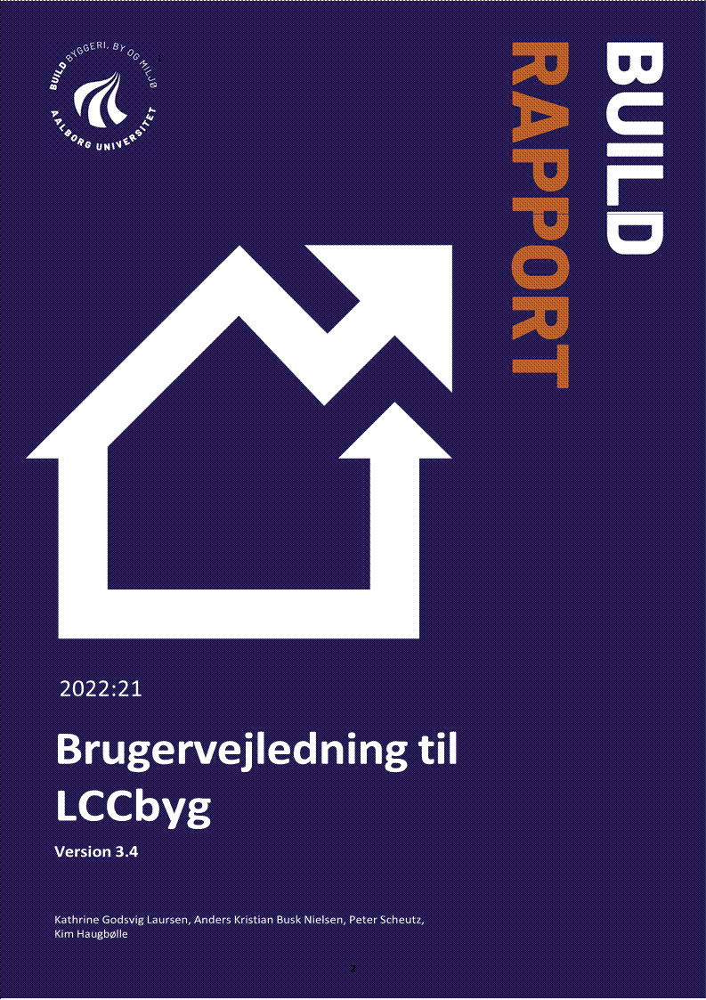
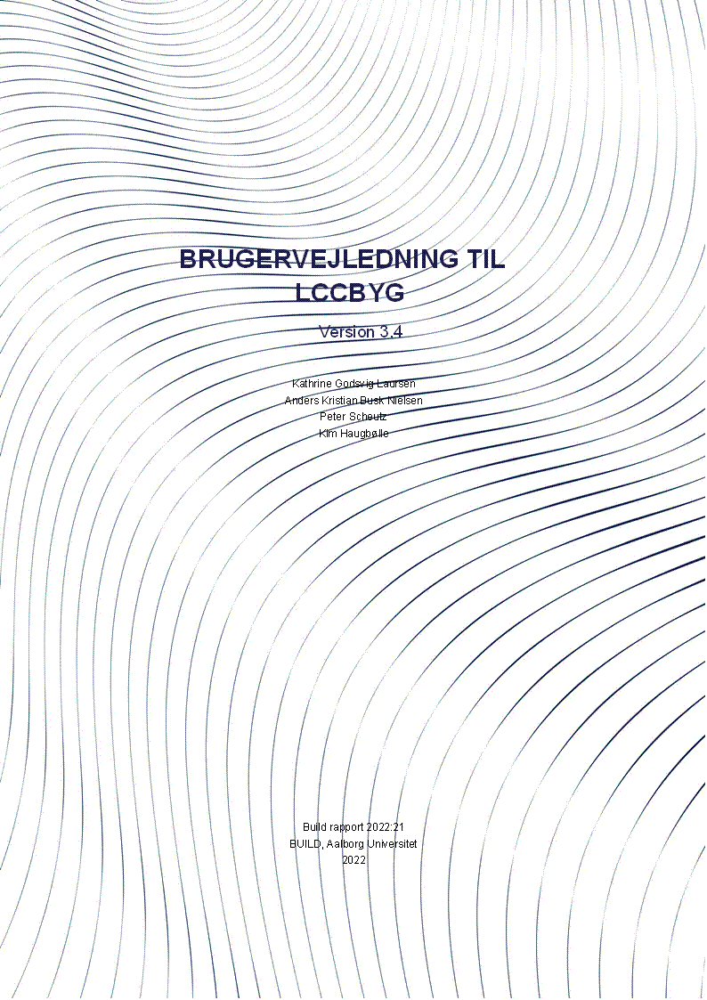
|
TITEL |
Brugervejledning til LCCbyg |
|
UNDERTITEL |
Version 3.4 |
|
SERIETITEL |
Build rapport 2022:21 |
|
UDGAVE |
1 |
|
FORMAT |
Digital |
|
UDGIVELSESÅR |
2022 |
|
UDGIVET DIGITALT |
Juni 2022 |
|
FORFATTER |
Kathrine Godsvig Laursen, Anders Kristian Busk Nielsen, Peter Scheutz & Kim Haugbølle |
|
SPROG |
Dansk |
|
SIDETAL |
79 |
|
LITTERATURHENVISNINGER |
Side 78 |
|
EMNEORD |
Totaløkonomi, anskaffelse, drift og vedligehold, forvaltning, forsyning, renhold, indtægter, restværdi |
|
ISBN |
978-87-563-2046-7 |
|
ISSN |
2597-3118 |
|
FORSIDEILLUSTRATION |
Peter Scheutz |
|
UDGIVER |
Institut for Byggeri, By og Miljø (BUILD), Aalborg Universitet A.C. Meyers Vænge 15, 2450 København SV E-post build@build.aau.dk www.build.dk |
|
|
|
Der gøres opmærksom på, at denne publikation er omfattet af ophavsretsloven.
INDHOLD
FIGUROVERSIGT 5
TABELOVERSIGT 6
FORORD 7
1 OM LCCBYG 10
1.1 Projektskabeloner 10
1.2 Hovedmoduler/features 12
2 HOVEDMENULINJE 15
2.1 Filer 15
2.2 Handlinger 16
2.3 Hjælp 16
2.4 Valg af foretrukne sprog – dansk eller engelsk 17
3 NØGLETAL 20
3.1 Navigation i kontoplaner 21
3.2 Import/eksport af nøgletal 22
3.3 Nøgletal og kilder 24
4 RÆKKETYPER OG POSTERINGER 28
4.1 Rækketyper 28
4.2 Posteringer 30
5 INDDATERING 34
5.1 Inddateringsfelt 34
5.2 Tilpasse informationer i inddatering 35
5.3 Tilpasning af inddatering 39
6 ALTERNATIVER 44
7 BEREGNINGSFORUD-SÆTNINGER 48
7.1 Kalkulationsrente 48
7.2 Prisudvikling 49
8 RESULTATER I RAPPORT 52
8.1 Sammensætning af rapporten 53
8.2 Eksport af rapport og rapport afsnit 57
9 MÅLSÆTNINGER 60
10 MILJØPÅVIRKNINGER 62
10.1 Miljøpåvirkningsscenarier 62
10.2 Miljøpåvirkninger 63
11 BOSSINF 66
12 DEN ENKLE SKABELON 70
12.1 Nøgletal 71
12.2 Rækketyper 71
12.3 Posteringstyper 72
12.4 Inddatering 74
12.5 Rapport 76
13 REFERENCER 78
FIGUROVERSIGT FIGUR 1. Startside LCCbyg 3.4.8..................................... 10
FIGUR 6. Nøgletallene findes i programmets højre side, når fanen inddatering er åben..... 20
FIGUR 7. Eksempel på mappestruktur i fanen med nøgletal vedrørende bygningsdele...... 21
FIGUR 16. Eksempel på rækkedetaljer for omkostnings- og indtægtstyper........................... 29
FIGUR 20. Funktioner til at tilføje, omdøbe, udfolde og slette grupper og rækker................. 36
FIGUR 38. Miljøpåvirkningsscenarierne i skabelonen DGNB-byområde................................. 62
TABELOVERSIGT
TABEL 1. Hovedmoduler og features i LCCbyg. .................................................................. 13
TABEL 2. Beskrivelser af kommandoer under ’Filer’. ........................................................... 16
TABEL 3. Beskrivelser af kommandoer under ’Handlinger’. ................................................ 16
TABEL 4. Overordnet beskrivelse af LCCbygs faner med nøgletal...................................... 20
TABEL 5. Step by step guide til import af egne nøgletal. ..................................................... 23
TABEL 6. Typeikon, rækketype og beskrivelse. ................................................................... 28
TABEL 7. Beskrivelse af frekvenser for renhold. .................................................................. 31
TABEL 8. Detaljer for alternativ. ........................................................................................... 45
TABEL 9. Automatisk indsatte rapportafsnit. ........................................................................ 53
TABEL 10. Rapportafsnit under ’Tekst og billeder’............................................................... 54
TABEL 11. Rapportafsnit under ’tabeller’. ............................................................................ 55
TABEL 12. Rapportafsnit under ’Figurer’. ............................................................................ 56
TABEL 13. Tilgængelige BOSSINF opmærkninger i LCCbyg. ............................................. 67
TABEL 14. Typeikon for postering i den enkle skabelon. ..................................................... 71
FORORD
LCCbyg er et beregningsværktøj til totaløkonomiske beregninger for bygningsdele, et byggeri eller et byområde. Denne publikation beskriver, hvordan de forskellige funktioner i LCCbyg version 3.4 anvendes.
Værktøjet LCCbyg er siden 2014 blevet udviklet af BUILD (tidligere Statens Byggeforskningsinstitut) ved Aalborg Universitet, som over tid har modtaget økonomisk støtte fra Bolig- og Planstyrelsen, Green Building Council Denmark, InnoBYG og Grundejernes Investeringsfond.
LCCbyg bliver udviklet af seniorforsker, ph.d. Kim Haugbølle (projektleder og fagligt ansvarlig) og softwarearkitekt Peter Scheutz (ansvarlig for udarbejdelse af datamodel, design og programmering) støttet af videnskabelig assistent Kathrine Godsvig Laursen, videnskabelig assistent Anders Kristian Busk Nielsen og systemudvikler Kaare Lind. Arbejdsgruppen er tidligere blevet suppleret med seniorforsker Nils Lykke Sørensen, videnskabelig assistent Daniel Pihl, rådgiver Haseebullah Wahedi og videnskabelig assistent Vania Mahdi.
Udviklingen af LCCbyg følges af en styregruppe, som består af repræsentanter fra de eksterne bevillingsgivere og BUILD.
Arbejdet med at udvikle LCCbyg følges løbende af en følgegruppe bestående af en bred kreds af interessenter og særligt sagkyndige. En stor tak rettes til følgegruppen, som på værdifuld vis har bidraget aktivt og konstruktivt til udviklingen af LCCbyg.
En stor tak rettes også til gruppen af testpersoner, som afprøvede og kommenterede en foreløbig version af LCCbyg. Beta-testen gav mange værdifulde og konkrete input og forslag til det videre arbejde med at udvikle LCCbyg.
BUILD – Institut for Byggeri, By og Miljø
København, juni 2022
Ruut Peuhkuri
Sektionsleder, Sektion for Bygge- og Anlægsteknik og Proces
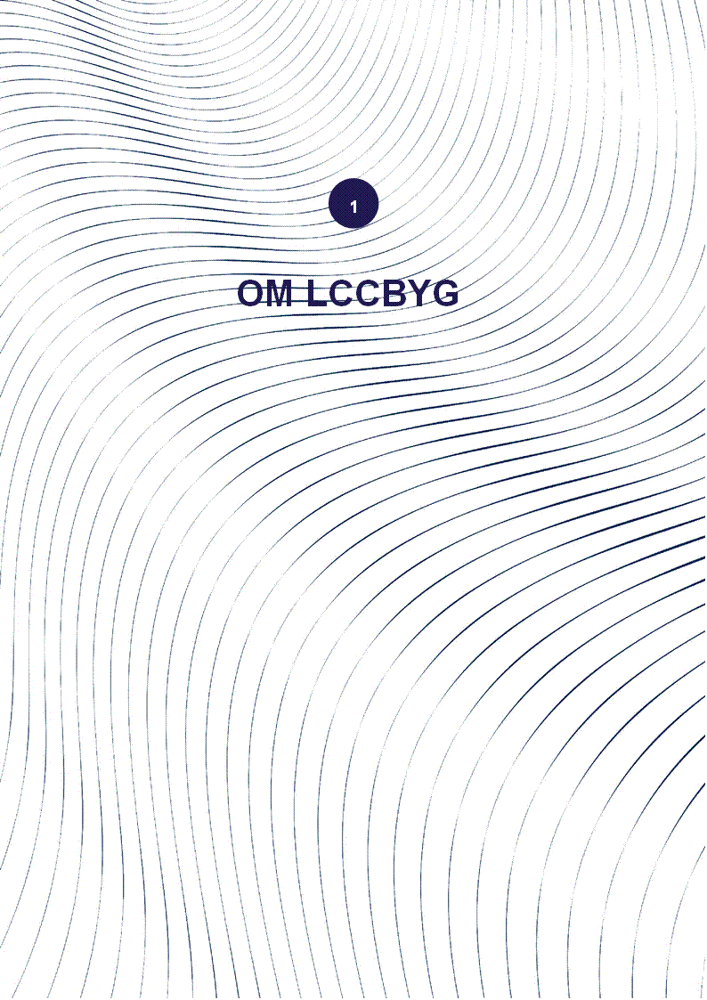
1 OM LCCBYG
|
Valg af skabelon Er du privatperson eller ny inden for totaløkonomiske beregninger, vil skabeloner under 'Den enkle skabelon' være at foretrække for dig. Er du derimod fagprofessionel, vil skabeloner under 'Standardskabeloner' og 'DGNB-skabeloner' være at foretrække for dig. Begge målgrupper har mulighed for at åbne eksempler, hvor én eller flere typiske beregninger er vist i form af eksempler. |
Dette er brugervejledningen til LCCbyg version 3.4, som er et digitalt værktøj, der kan bruges til totaløkonomiske beregninger. Brugervejledningen gennemgår de punkter, du bør være opmærksom på forud for en beregning og de forskellige trin i beregningen.
LCCbyg-beregninger består overordnet af følgende trin i programmet:
1. Valg af projektskabelon og beregningstype.
2. Indtastning af informationer under ’Inddatering’.
3. Tilpasning af beregningsforudsætninger for den totaløkonomiske beregning.
4. Vurdering, sammenstilling og udtrækning af resultater under ’Rapporter’.
1.1 Projektskabeloner
LCCbyg indeholder en række projektskabeloner. Der findes overordnet set tre forskellige skabelontyper som vist på figur 1. På startsiden kan du vælge den skabelon, der er mest relevant for dit projekt.
Under hver skabelontype findes én eller flere skabeloner samt ét eller flere eksempelprojekter. For nærmere information omkring eksempelprojekterne, se LCCbyg.dk.
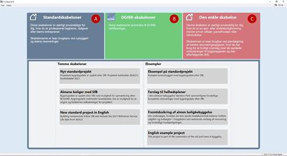
FIGUR 1. Startside LCCbyg 3.4.8
Note: Vælg den relevante skabelon blandt Standardskabeloner, DGNB-skabeloner og den enkle skabelon.
1.1.1 Standardskabeloner
Under Standardskabeloner kan der vælges mellem skabeloner og eksempelprojekter (se figur 2).
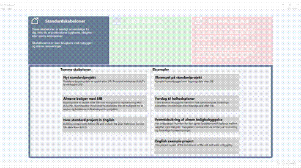
Note: De tomme skabeloner ses til venstre, og eksemplerne ses til højre.
’Nyt standardprojekt’ er LCCbygs standardskabelon. Den indeholder BUILDs Levetidstabel med bygningsdele opdelt efter SfB (Haugbølle et al., 2021). En engelsk version af denne skabelon findes under ’New standard project in English’.
’Almene boliger med SfB’ er en udvidet version af standardprojektet, hvor bygningsdele er opdelt efter SfB med mulighed for opmærkning efter BOSSINF (se 11 BOSSINF). Derudover er det muligt at angive og bedømme målsætninger for projektet (se afsnit 9 Målsætninger).
1.1.2 DGNB-skabeloner
DGNB-skabelonerne er skræddersyede til DGNB-certificeringer (se figur 3). De indeholder alle levetider og enhedspriser for forsyning og renhold.
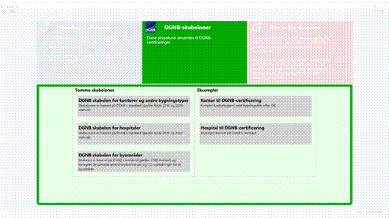
Note: De tomme skabeloner ses til venstre, og eksemplerne ses til højre.
'DGNB-skabelon for kontorer og andre bygningstyper' er baseret på DGNB’s standard.
Den følger således både 2016 og 2020-manualerne.
'DGNB-skabelon for hospitaler' er baseret på DGNB’s standard for hospitalsbyggerier.
'DGNB-skabelon for byområder' er baseret på DGNB’s 2020-manual. Skabelonen benyttes til at beregne de samlede levetidsomkostninger og miljøpåvirkninger for et byområde. Se afsnit 10 for mere information om beregning af Miljøpåvirkningerne.
1.1.3 Den enkle skabelon
Den enkle skabelon er målrettet den ikke-professionelle bruger, og er særlig anvendelig for dig, hvis du er en ejer- eller andelsboligforening, mindre privat udlejer, parcelhusejer eller håndværker. Skabelonen er især brugbar ved planlægning af mindre renoveringsopgaver, hvor du har brug for et hurtigt overslag over de samlede omkostninger til byggeopgaven og den efterfølgende drift, idet skabelonen indeholder priser. Figur 4 viser fanebladet for den enkle skabelon, som består af en skabelon og et eksempelprojekt. Læs mere om den enkle skabelon i afsnit 12 Den enkle skabelon.
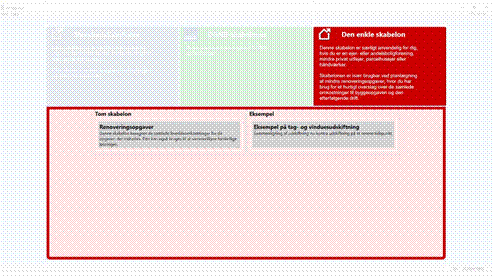
Note: De tomme skabeloner ses til venstre, og eksemplerne ses til højre. Disse skabeloner indeholder detaljer vedrørende typisk vedligehold, enhedspriser samt levetid mm. Som bruger skal du blot indtaste dine mængder.
1.2 Hovedmoduler/features
LCCbyg indeholder en række hovedmoduler og features, der er nærmere beskrevet i afsnit 2-11. Hovedmodulerne findes i alle LCCbygs projektskabeloner, imens de forskellige features findes i enkelte, skræddersyede projekter. Tabel 1 noterer hvilke skabeloner, der indeholder hvilke hovedmoduler og features.
TABEL 1. Hovedmoduler og features i LCCbyg.
|
|
|
|
|
|
|
|
|
|
Hovedmenulinje Hovedmenulinjen indeholder grundlæggende funktionaliteter som ’gem projekt’, ’åbn projekt’, ’luk projekt’, ’hjælp’ og ’sprog’. Se mere under afsnit 2 Hovedmenulinje. |
|
|
|
|
|
|
|
|
Nøgletal LCCbyg indeholder nøgletal og kilder til inddatering. Alle skabeloner kommer med én eller flere faner med nøgletal, der kan sammensættes for at tilpasse din beregning. Du kan også definere dine egne nøgletal. Se mere under afsnit 3 Nøgletal. |
|
|
|
|
|
|
|
|
Posteringstyperne LCCbyg benytter forskellige posteringstyper i den totaløkonomiske beregning. Dette gør sig gældende på tværs af programmets skabeloner. Se mere under afsnit 4 Rækketyper og posteringer. |
|
|
|
|
|
|
|
|
Inddatering Inddateringen består af rækker og informationer indsat via nøgletal. På baggrund af disse foretages den totaløkonomiske beregning. Se mere under afsnit 5 Inddatering. |
|
|
|
|
|
|
|
|
Alternativer LCCbyg gør det muligt at arbejde med flere alternativer i den samme beregning. Alternativer oprettes og redigeres under 'Inddatering'. LCCbyg vil altid rumme mindst ét alternativ. Du kan oprette, kopiere og slette alternativer. Du bør tilpasse detaljer for alternativer for alle alternativer i din beregning. Se mere under afsnit 6 Alternativer. |
|
|
|
|
|
|
|
|
Beregningsforudsætninger ’Forudsætninger’ fastlægger en række generelle beregningsforudsætninger, dvs. kalkulationsrente og prisudvikling for forskellige omkostningsgrupper. Se mere under afsnit 7 Beregningsforudsætninger. |
|
|
|
|
|
|
|
|
Resultater i rapport Beregningsresultaterne kan vises i forskellige grafiske og tabelmæssige opsætninger under programmets rapportmodul. Her har du også mulighed for at sammensætte og tilpasse dine egne rapporter via en række prædefinerede rapportafsnit. Se mere under afsnit 8 Resultater i rapport. |
|
|
|
|
|
|
|
|
Målsætninger I skabelonen 'Almene boliger med SfB' er det muligt at opstille målsætninger for hvert alternativ. På den måde kan det vurderes, hvilke målsætninger hvert projekt lever op til i hvilken grad. Se mere under afsnit 9 Målsætninger. |
|
|
|
|
|
|
|
|
Miljøpåvirkninger DGNB Byområder beregner foruden levetidsomkostninger også på CO2-udledninger forbundet med et byområde. Miljøpåvirkningerne (i form af CO2-udledninger) beregnes via 'Miljøpåvirkningsscenarie' og nøgletal udviklet til certificering af byområder fra DGNB2020-manualen. Se mere under afsnit 10 Miljøpåvirkninger. |
|
|
|
|
|
|
|
|
BOSSINF støttekategorier Det er muligt at tilføje BOSSINF-STB støttekategorier i skabelonen for almene boliger. Se mere under afsnit 11 BOSSINF. |
|
|
|
|
|
|
|
Note: Bemærk desuden, at den enkle skabelon som standard vises i en simpel visning.
Denne er beskrevet yderligere i afsnit 12 Den enkle skabelon.
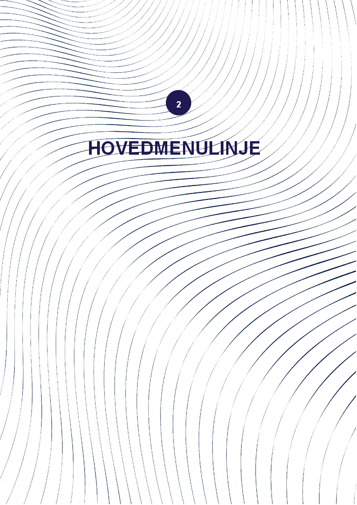
2 HOVEDMENULINJE
På startsiden består ‘Hovedmenulinjen’ af ‘Filer’ og ‘Hjælp’, imens ’Handlinger’ aktiveres når en skabelon er åbnet. Menupunktet ’Filer’ er aktivt, men nogle af de underliggende funktioner såsom ‘Luk projekt’, ‘Gem’ og ‘Gem som’ er inaktive og vil blive først aktive, når en projektfil er åben. Derimod er alle funktioner i menupunktet ‘Hjælp’ aktive og kan tilgås. Menupunktet ‘Handlinger’ er ikke synlig på ‘Startsiden’, men bliver synlig og aktiv, når et projekt er åben. Hovedmenulinjen vises på figur 5.
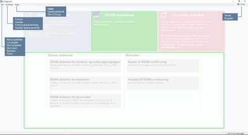
Note: Her findes funktioner under knapperne ’Filer’, ’Handlinger’, ’Hjælp’ og ’Sprog’.
Når en projektfil er åben, så vil alle funktioner i ‘Filer’ og ‘Hjælp’ være aktive. Funktioner i ‘Handlinger’ bliver først aktive, når der tilføjes eller slettes en gruppe. Her beskrives både de funktioner, som er aktive på ‘Startsiden’ og de funktioner, som vil blive først aktive, når et projekt er åbent. Til højre for ‘Hovedmenulinjen’ findes mulighed for sprogversionering.
|
To filer åben på samme tid Hvis du vil have to projektfiler åbne på samme tid, skal du åbne applikationen to gange og åbne en projektfil i hver af de to åbne applikationer. |
2.1 Filer
LCCbyg gemmer data som tekstfiler i filformatet xml (lccxml). Formatet gør filerne relativt små og kan dermed nemt udveksles over mail. Bemærk dog, at indsætning af billede eller logo kan få projektfilen til at vokse betydeligt. Tabel 2 beskriver hver af de seks kommandoer.
TABEL 2. Beskrivelser af kommandoer under ’Filer’.
|
Kommando |
Beskrivelse |
Genvejstast |
|
|
Åbn |
Du kan åbne en projektfil fra menulinjen ‘Filer’, hvis du allerede har gemt en eller flere projektfiler. Hvis du vil åbne en gammel projektfil fra en tidligere version af LCCbyg, skal du i dialogboksen ændre filtypen fra ‘LCCbyg filer (*. lccxml)’ til ‘XML-filer (*.xml)’. Herefter vises de gamle projektfiler fra tidligere versioner af LCCbyg. |
CTRL + |
|
|
Luk projekt |
Ønsker du at komme tilbage til startsiden, kan du vælge ’Luk projekt’ under ’Filer’ i menubjælken. Husk eventuelt at gemme alle ændringer, inden projektet lukkes. |
CTRL + |
|
|
Gem |
Du kan gemme filer på to måder – Gem eller Gem som, som det kendes fra de fleste almindelige kontorapplikationer. Hvis du bruger Gem, vil filen blive gemt på den drevplacering, som computeren generelt er sat op til. Hvis du bruger Gem som – hvilket anbefales – kan du selv bestemme, hvor filen skal gemmes. |
CTRL + |
|
|
Gem som |
CTRL + S |
ALT + |
|
|
Seneste |
Funktionen ’Filer\Seneste’ giver en oversigt over de senest åbnede filer. Funktionen fungerer som en genvej, hvor du kan åbne de senest åbnede filer ved at klikke på den. |
|
|
|
Afslut |
Du kan lukke applikationen ved genvejstasten Alt+F4 eller via menulinjens ‘Filer\Afslut’. |
ALT + |
|
2.2 Handlinger
Under ‘Handlinger’ har du mulighed for at fortryde eller gendanne på forskellige niveauer.
Tabel 3 beskriver de mulige handlinger.
TABEL 3. Beskrivelser af kommandoer under ’Handlinger’.
|
Kommando |
Beskrivelse |
Genvejstast |
|
|
Fortryd |
Fortryd og gendan kan aktiveres ved hjælp af genvejstasterne Ctrl+Z og Ctrl+Y. Du kan også finde funktionen via ’Handlinger’ i hovedmenulinjen som vist på figur 5. |
CTRL + |
|
|
Gendan |
CTRL + |
|
|
|
Fortryd global ændring |
Hvis du vil bruge fortryd og gendan på det øverste niveau, dvs. når der er tilføjet eller slettet en fane, skal du fortryde/gendanne globale ændringer. Funktionerne ligger under ’Handlinger’ og hedder ‘Fortryd global ændring’ og ‘Gendan global ændring’. Funktionen virker til alternativer, prisudviklingssæt og rapporter. |
|
|
|
Gendan global ændring |
|
||
2.3 Hjælp
Du kan få hjælp enten ved at trykke F1 et vilkårligt sted i applikationen eller under funktionen ’Hjælp’ i menubjælken. Bemærk, at ’Hjælp’ og ’Versionshistorik’ åbnes i din foretrukne webbrowser.
2.4 Valg af foretrukne sprog – dansk eller engelsk
Du kan vælge hvilken sprogversion, som du vil arbejde med. Hvis du klikker på flaget i øverste højre hjørne, kommer en menu til syne, hvor du kan vælge sprog. Der er pt. to muligheder: Dansk og engelsk.
Den generelle regel for sprogversionering er, at det er den valgte skabelon, som styrer sproget. Danske skabeloner vil derfor åbne på dansk, og den engelske skabelon vil åbne på engelsk. Hvis du senere åbner en dansk projektfil henholdsvis engelsk projektfil, vil den altså fortsat blive vist på dansk hhv. engelsk. Med andre ord kan du ikke forvente, at alt dansk indhold bliver oversat til engelsk og vice versa ved blot at skifte sprog.
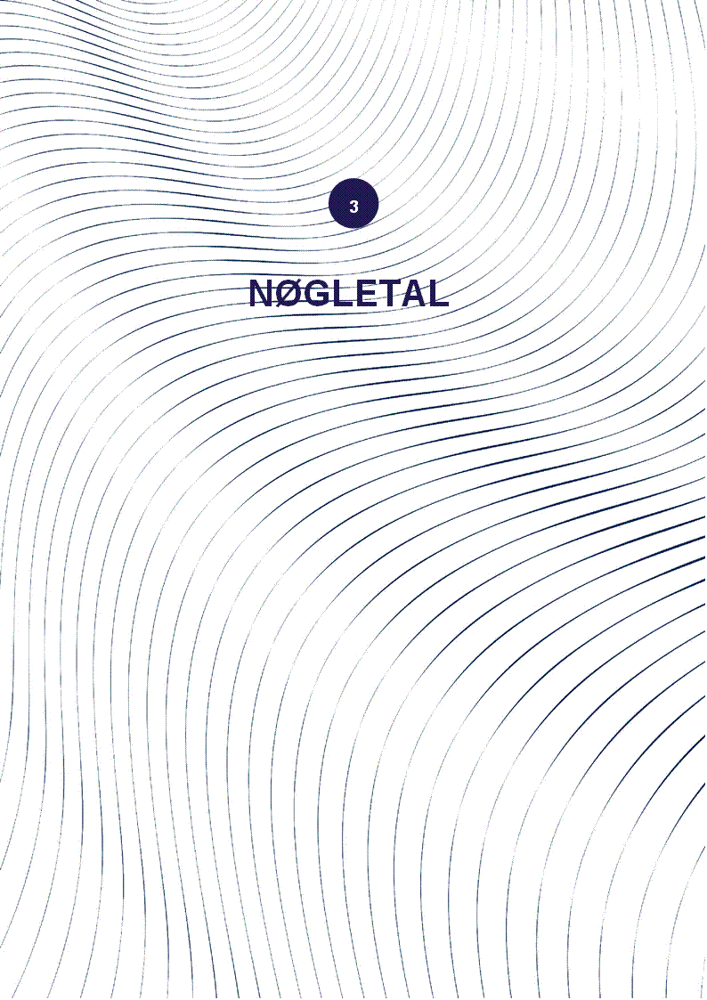
3 NØGLETAL
Følgende afsnit beskriver de tilgængelige nøgletal i LCCbyg, introducerer navigationsprincippet i nøgletal og beskriver muligheden for at importere og eksportere egne nøgletal. Nøgletallene findes i programmets højre side, når fanen inddatering er åben (se figur 6).
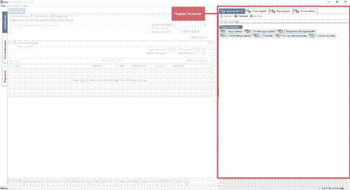
Alle skabeloner kommer med en eller flere faner med nøgletal. Du skal bruge nøgletallene til at sammensætte og tilpasse dine beregninger til det aktuelle behov. LCCbyg indeholder i alt 8 faner i nøgletalsmodulet (se tabel 4). Indholdet af de respektive faner af nøgletal uddybes i afsnit 3.2, men først en introduktion til navigationsprincipperne i nøgletallene.
TABEL 4. Overordnet beskrivelse af LCCbygs faner med nøgletal.
|
Fanenavn |
Beskrivelse |
|
Tomme ræk- ker |
Tomme rækker findes i alle skabeloner, undtagen DGNB Byrum og den enkle skabelon. Tomme rækker kan benyttes, når skabelonens andre nøgletal ikke passer på dit projekt. |
|
Bygningsdele |
Bygningsdele findes i alle standardskabeloner. Bygningsdelene er baseret på BUILD’s levetidstabel og klassificeret efter SfB-systemet. |
|
Andre nøgle- tal |
Andre nøgletal findes i alle standardskabelonerne. Andre nøgletal indeholder nøgletal for grund, rådgivning, bygherreomkostninger, forvaltning, forsyning og renhold. |
|
Bygningstyper |
Bygningstyper findes i alle standardskabelonerne. Nøgletallene kan anvendes til indledende planlægning af byggeprojekter eller byplanlægning. |
|
Nøgletal - SfB |
Nøgletal – SfB benyttes i DGNB skabelonen til kontorer og andre bygningstyper samt DGNB-hospital. Nøgletallene er baseret på DGNB-manualerne. |
|
Målsætninger |
Målsætninger findes i skabelonen til Almene boliger med SfB. Målsætninger indeholder kriterier, der kan opstilles til vurdering af hvert alternativ. |
|
DGNB-byrum |
DGNB-byrum benyttes i DGNB Byområder skabelonen. Nøgletallene er baseret på DGNB 2020-manualen og benyttes til at beregne totaløkonomi og CO2-udledninger for et byområde. |
|
Opgaver |
Opgaver benyttes i den enkle skabelon, hvor simple totaløkonomiske beregninger kan udføres. |
3.1 Navigation i kontoplaner
Navigationsprincippet er fælles for alle nøgletalsfaner. I det følgende forklares princippet for navigation på baggrund af fanen indeholdende bygningsdele (se bygningsdele for nærmere beskrivelse af hvad disse nøgletal indeholder). Der findes grundlæggende mapper og rækker i nøgletalsvisningen.
Figur 7 viser fanen, når den åbnes i LCCbyg. I bygningsdele findes 7 hovedmapper. Hvis du trykker på mapperne, kan du se hvad de indeholder. Den røde firkant markerer hovedmappen for nøgletallene i fanen. Den kan du altid trykke på for at komme tilbage til udgangspunktet.
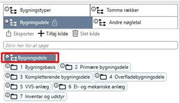
Figur 8 viser mappestrukturen et niveau dybere nede i hierarkiet. Den røde firkant i toppen af billedet viser stien for den åbne mappe, og du kan altid bruge denne til at navigere imellem mapper på overliggende niveauer. Den nederste røde firkant viser, at der er yderligere rækker og undergrupper. Du kan trykke på mapperne for at se, hvad de indeholder.
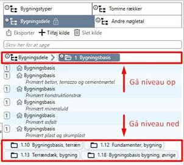
Note: Brug mapperne over rækkerne til at gå et eller flere mappeniveauer op. Brug mapperne under rækkerne til at gå et niveau ned.
Der er med andre ord et generelt princip, hvor mapper, der vises over rækkerne, kan bruges til at gå en eller flere led op i en mappestruktur, imens mapper under rækkerne kan bruges til at gå et niveau ned ad gangen. Hvis ikke der er flere mapper under rækkerne, er der ikke yderligere undergrupperinger af nøgletallene. Figur 9 viser, hvordan stien for placeringen kan vokse. Bemærk at den aktive mappe er markeret med mørkeblå. Figur 9 viser ydermere forskellige detaljer, der generelt kan læses ud af rækker under nøgletal. For nærmere beskrivelse af rækketype og detaljer – se afsnit 4.1 Rækketyper.
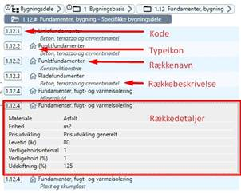
3.1.1 Søgefunktion
Hvis ikke du ved hvor en specifik række befinder sig, kan det være nyttigt at bruge søgefunktionen. Under fanerne med nøgletal kan du foretage en søgning efter rækker. Søgningen sker inden for den valgte fane. Hvis rækkerne har koder, kan du også søge efter dem.
Figur 10 viser et eksempel på fremsøgning af ’vinduer’ i nøgletalsfanen ’Bygningsdele’.
Du kan trække den relevante række direkte fra søgeresultatet og sætte den ind i den ønskede gruppe. Søgning afsluttes ved at trykke på den grå papirkurv i søgefeltet.
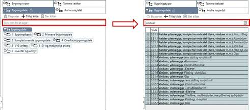
Note: Søg efter rækker ved hjælp af søgefunktionen og indsæt direkte i inddateringen.
3.2 Import/eksport af nøgletal
Det er muligt at eksportere data til Excel-regneark (xlsx-format). Under ‘Kontoplaner’ er det muligt at eksportere nøgletal til regneark, som sender alle standardværdier over i et regneark, som kan åbnes og redigeres i både MS Excel, Libre Office og andre regnearksprogrammer.
Tabel 5 indeholder en kort guide til brug af import/eksport funktionen. Se lccbyg.dk/io/iokeydata/ for nærmere beskrivelse. Her finder du også en skabelon til import af egne nøgletal, som du kan tage udgangspunkt i.
TABEL 5. Step by step guide til import af egne nøgletal.
|
Du kan tilføje dine egne nøgletal ved at klikke på ‘Tilføj kilde’. |
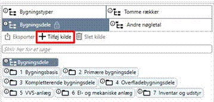
|
|
Vælg den fil, som du ønsker at importere og afslut med ‘Open’/’Åben’. |
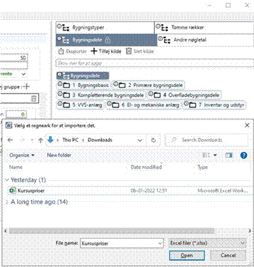
|
|
Regnearket med kursuspriser er nu importeret. Bemærk muligheder for at eksportere og slette kilden igen. Du kan eksportere dine egne nøgletal til regneark via ‘Eksporter’ eller slette kilden, hvis ikke du ønsker at benytte den alligevel.
|
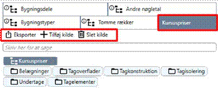
|
3.3 Nøgletal og kilder
I skabelonerne for de fagprofessionelle bruger er der seks kontoplaner, som går igen på tværs af skabelonerne, men detaljeringsgraden mv. er forskellig fra skabelon til skabelon. Beregningsmetoderne for de seks kontoplaner varierer også fra at regne alene på anskaffelsesomkostninger til alene at regne på driftsomkostninger i forskellige varianter og videre til en kombination af både anskaffelses- og driftsomkostninger, herunder udskiftning/genopretning. Kontoplaner født med LCCbyg er låste og kan ikke ændres. For mulighed for at oprette dine egne nøgletal – se afsnit 3.2 Import/eksport af nøgletal.
3.3.1 Tomme rækker
Alle skabeloner undtagen den enkle skabelon og DGNB-byrum har ‘Tomme rækker’ som kilde i LCCbygs højreside.
Der findes en tom række for hver af de otte generelle rækketyper. På den måde kan du selv inddatere enkelte rækker med egne nøgletal. Hvis du har større datasæt med nøgletal, du ønsker at basere dine beregninger på, kan du med fordel benytte import og eksport af egne nøgletal. Figur 11 viser fanebladet med de otte forskellige tomme rækker.
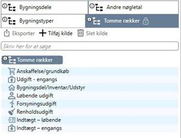
Note: Tomme rækker kan bruges til inddatering, når de øvrige nøgletal ikke passer til dit projekt.
3.3.2 Bygningsdele
Alle standardskabeloner har fanebladet ‘Bygningsdele’ i højresiden. Bygningsdelene er baseret på BUILD’s levetidstabel 2021 (Haugbølle et al., 2021). Bygningsdelene er opbygget i følgende hierarki og følger SfB-klassifikationssystemet:
• Hovedgrupper.
• Hovedbygningsdele.
• Bygningsdele.
• Specifikke bygningsdele.
Hovedgrupperne er hovedmapper indeholdende hovedbygningsdele, bygningsdele og specifikke bygningsdele. Figur 12 viser hierarkiet i nøgletallene baseret på et eksempel.
Note: Stien illustrerer bygningsdelenes betegnelse jf. SfB-klassifikationssystemet.
3.3.3 Bygningstyper
Fanen med ‘Bygningstyper’ indeholder nøgletal for forskellige bygningstyper. Nøgletallene er defineret på baggrund af BUILD’s levetidstabel (Haugbølle et al., 2021). Bygningstyperne er opbygget efter seneste udgave af BBR-koderne fra maj 2020 (Udviklings- og Forenklingsstyrelsen, 2020).
Figur 13 viser nøgletallene for bygningstyperne, når denne fane vælges. Fanen indeholder 13 grupper. Hver af disse grupper er derudover repræsenteret ved en aggregeret række, der sammenfatter levetiden for alle bygningstyper indeholdt i den respektive gruppe. Fx. indeholder gruppen ‘Helårsbeboelse’ 8 rækker med levetider fra 40 til 120 år, imens rækken ‘Helårsbeboelse’ har en levetid på 120 år. For nærmere beskrivelse se BUILD’s levetidstabel.
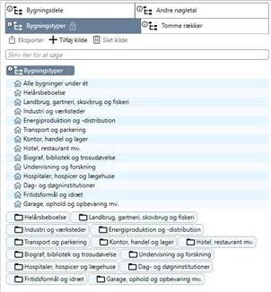
Note: Bygningstyper kan benyttes til byplanlægning eller tidlige overslag på totaløkonomi for et byggeprojekt.
3.3.4 Andre nøgletal
Figur 14 viser fanen ‘Andre nøgletal’, som indeholder nøgletal for henholdsvis ‘Grund, rådgivning og bygherre’, ‘Forvaltning’, ‘Forsyning’ og ‘Renhold’.
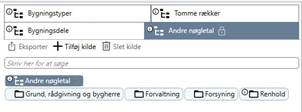
Note: Fanen med andre nøgletal indeholder nøgletal for ‘Grund, rådgivning og bygherre’, ‘Forvaltning’, ‘Forsyning’ og ‘Renhold’.
3.3.5 Nøgletal – SfB
I DGNB-skabelonerne findes nøgletal under ‘Nøgletal – SfB’ (se figur 15). Denne indeholder nøgletal, der benyttes i forbindelse med DGNB-certificeringer for byggerier. Her finder du alle de rækker, du kan have brug for i forbindelse med totaløkonomiske beregninger af dit DGNB-projekt.
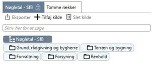
Nøgletallene i ‘Nøgletal – SfB’ indeholder fem elementer:
• Grund, rådgivning og bygherre.
• Terræn og bygning.
• Forvaltning.
• Forsyning.
• Renhold.
Nøgletallene i grupperne ‘Grund, rådgivning
og bygherre’, ‘Forvaltning’, ‘Forsyning’ og ‘Renhold’ svarer til nøgletallene
under ‘Andre nøgletal’, som benyttes i standardskabelonerne.
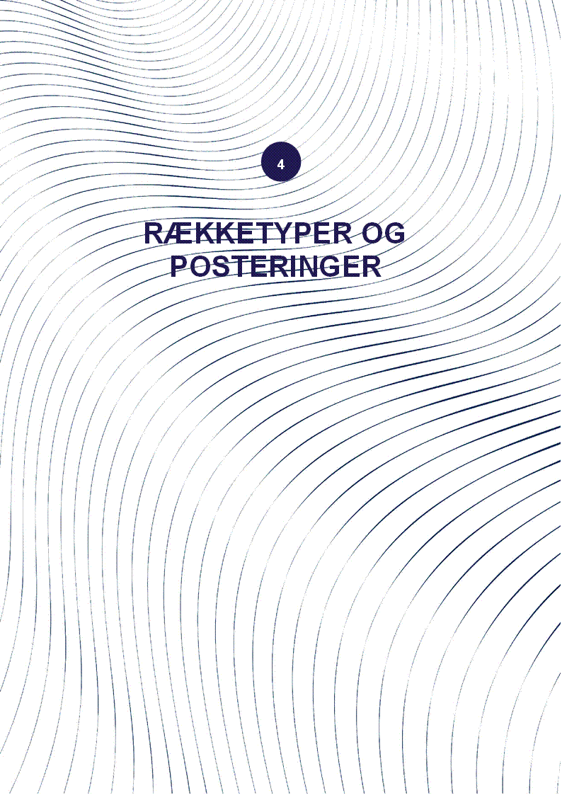
4 RÆKKETYPER OG POSTERINGER
Der findes otte forskellige typer af rækker, der kan inddateres i LCCbyg. Disse er nærmere beskrevet i nedenstående afsnit. Den inddaterede rækketype har direkte indflydelse på hvordan det inddaterede medtages i den totaløkonomiske beregning, fordi rækketyperne afspejler posteringstypen for de respektive rækker. Mere om det i ses i afsnit 4.2 Posteringer.
4.1 Rækketyper
LCCbyg benytter rækketyper til posteringer. Der findes i alt 8 forskellige rækketyper. Hver af disse indeholder forskellige posteringstyper, som påvirker de totaløkonomiske beregninger.
Tabel 6 indeholder beskrivelser af de 8 forskellige rækketyper, der indgår i LCCbyg.
Yderligere viser kolonnen 'Typeikon' de respektive symboler for de forskellige rækketyper. Disse fremkommer både blandt nøgletal og i inddateringen, således du let kan se hvilken rækketyper og derved posteringstype der er tale om. I det efterfølgende beskrives de typiske rækkedetaljer og posteringstyper for de forskellige rækketyper.
TABEL 6. Typeikon, rækketype og beskrivelse.
|
Typeikon |
Rækketype |
Beskrivelse |
|
|
Anskaffelse/grundkøb |
Anskaffelse/grundkøb benyttes til anskaffelser til byggeprojektet, som har anskaffelse og restværdi som fx grundkøb, men ikke vedligehold og udskiftning. |
|
|
Engangsudgift |
Engangsudgift benyttes til postering af udgifter, som kun forekommer én gang i løbet af beregningsperioden som fx honorarer til rådgivning eller udgifter til byggeplads. |
|
Løbende udgift |
Løbende udgift benyttes til postering af udgifter, som forekommer hvert år i beregningsperioden som fx administrationsudgifter, ejendomsskat, dækningsafgifter eller ejendomsforsikringer. |
|
|
|
Bygningsdel |
Bygningsdele benyttes til anskaffelse, drift og vedligehold og udskiftning af bygningsdele, bygningstyper og inventar og udstyr. |
|
|
Forsyningsudgift |
Forsyningsudgifter dækker over de løbende udgifter til forsyning af byggeprojektet, herunder varme-, el- og vandforbrug samt evt. affald. |
|
|
Renholdsudgift |
Renholdsudgifter dækker over løbende udgifter til renhold af byggeriet fx vinduespudsning, gulvvask eller snerydning. |
|
|
Løbende indtægt |
Løbende indtægter dækker over de løbende indtægter, som byggeriet genererer fx solcellestrøm, vindmøllestrøm eller solvarmeanlæg. |
|
|
Engangsindtægt |
Engangsindtægter dækker over indtægter, der falder en enkelt gang i løbet af beregningsperioden. Det kan fx være støttebeløb fra fonde eller gensalgsværdi for salg af bygningsdele, der ikke længere benyttes. |
Alt efter hvilken rækketype, der er inddateret, fremkommer forskellige rækkedetaljer og posteringstyper. Figur 16 viser rækkedetaljer for samtlige rækketyper. Der findes 9 forskellige posteringstyper; Anskaffelse, Engangsudgift, Vedligehold, Udskiftning, Forvaltning, Forsyning, Renhold, Løbende indtægt og Engangsindtægt.
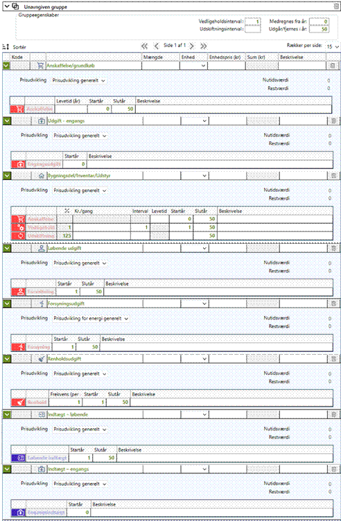
4.2 Posteringer
Alternativets posteringer opsummeres i bunden af LCCbyg. Her ses nutidsværdien for de forskellige posteringstyper sammen med restværdien og den samlede nutidsværdi. Under 'Rapport' kan hovedposter og nutidsværdier sammenlignes på tværs af alternativer.
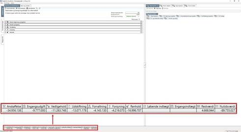
Note: Alternativets samlede posteringer og nutidsværdi kan ses i bunden af LCCbyg.
Fælles for alle posteringstyper er, at der skal angives mængder, enheder og enhedspriser.
Nogle posteringstyper som fx renhold kommer med en prædefineret enhedspris.
4.2.1 Anskaffelse
Både 'Anskaffelse/grundkøb', bygningsdele og bygningstyper posteres under anskaffelse i LCCbyg. Det vil sige, at anskaffelsesomkostningerne i inddateringen summeres på tværs af rækketyper og posteres under 'Anskaffelse'.
Under 'Inddatering' indtastes anskaffelsesomkostningerne for hver af de omkostningstyper, der er valgt. Bemærk, at anskaffelsesomkostningerne falder i det år, som gruppen medregnes fra. Dette er som regel år 0, medmindre du har tilpasset denne værdi. Du kan også se, hvornår omkostningen forfalder i feltet 'startår'. Du kan inddatere eller tilpasse levetiden for din anskaffelse, hvis du ønsker.
4.2.2 Engangsudgifter
Engangsudgifter konteres i det år, der er angivet i 'startår'. Typisk vil engangsudgifter dække over omkostninger til byggeplads, honorarer til arkitekt, ingeniør o. lign. eller bygherreomkostninger.
4.2.3 Vedligehold
De inddaterede nøgletal kommer med en prædefineret vedligeholdelsesprocent, som ikke kan ændres. Vedligeholdsprocenten angiver, hvor meget det årlige eller periodiske vedligehold udgør som en procentdel af rækkens anskaffelsesværdi. Vedligeholdsomkostningen angiver beløbet per gang, som vedligeholdet skal udføres. Vedligeholdsomkostningen udregnes på basis af vedligeholdsprocenten, vedligeholdsintervallet og anskaffelsesværdien. Hvis du ønsker at afsætte et større beløb per vedligeholdsgang, kan du tilpasse denne under 'Kr./gang' ved at overskrive værdien, der står i feltet.
Vedligeholdsintervallet angiver frekvensen for, hvor ofte vedligehold af rækken skal udføres. Et vedligeholdsinterval på 1 svarer således til én gang årligt, imens et interval på 2 svarer til hvert andet år. 'Interval (år)' angiver, hvornår vedligeholdet begynder. Dette afspejles også i 'startår', imens 'slutår' angiver, hvornår udgiften frafalder. Slutåret vil som hovedregel svare til beregningsperioden.
4.2.4 Udskiftning
LCCbyg hensætter 125 % af anskaffelsesomkostning til udskiftning af bygningsdelen/typen ved endt levetid. Udskiftningsprocenten kan ikke ændres, men hvis du ønsker at afsætte et større eller lavere beløb til udskiftning af bygningsdelen, kan dette gøres under ’Kr./gang’, hvorved udskiftningsprocenten overskrives.
LCCbyg beregner udskiftning med udgangspunkt i 'Levetid (år)' og 'Startår' året for beregningsperioden. Hvis 'Startår' af udskiftning er større end udløb af beregningsperioden, vil programmet ikke medtage udskiftningen.
4.2.5 Forvaltning
Forvaltning omfatter omkostninger til skatter, forsikring osv. Under denne kosttype skal mængden, enhedsprisen samt start- og slutår inddateres.
Forvaltningsomkostningerne falder som en løbende udgift, der medregnes årligt fra startår til slutår.
4.2.6 Forsyning
Forsyning omfatter omkostninger til vand, varme, elektricitet og anden forsyning i beregningen baseret på forslag til enhedspriser i applikationen. Enhedspriserne kan overskrives med egne værdier fx fra det lokale forsyningsselskab. Forslagene til standardværdierne kan om nødvendig overskrives under inddatering.
Under 'Inddatering' skal du alene indtaste de samlede mængder fx energibehov opgjort i kWh per år. Disse mængder vil normalt fremgå af de obligatoriske energirammeberegninger eller energimærker. Forsyningsudgifterne er en løbende udgift, der medregnes årligt fra startår til slutår.
4.2.7 Renhold
Renhold omfatter omkostninger til forskellige typer af renhold i beregningen baseret på standardværdier for frekvens (per år) og enhedspriser.
Enhedsprisen dækker alle omkostninger i forbindelse med renhold inkl. rengøringspersonale og overheadomkostninger. Enhedspriserne opgøres i kr./m2 eller kr./stk.
Frekvens svarer til hvor mange gange årligt rengøringen skal udføres (opgjort i antal/år). Tabel 7 viser, hvordan de typiske frekvenser anvendt i LCCbyg forstås.
TABEL 7. Beskrivelse af frekvenser for renhold.
|
Frekvens |
Beskrivelse |
|
1 |
Én gang årligt |
|
2 |
To gange årligt |
|
26 |
Én gang hver anden uge |
|
100 |
To gange om ugen, ekskl. helligdage |
|
256 |
5 gange om ugen, ekskl. helligdage, dvs. renhold i hverdagene |
Under 'Inddatering' skal du alene indtaste mængder. Du kan dog om nødvendig overskrive standardværdierne under 'Inddatering'. Udgifter til renhold er en løbende udgift, der medregnes årligt fra startår til slutår.
4.2.8 Løbende indtægt
Forsyningsindtægter posteres som løbende indtægter i LCCbyg. Forsyningsindtægter omfatter indtægter fra lokal produktion af elektricitet på ejendommen typisk i form af elektricitet fremstillet ved hjælp af solceller på tag og facade eller ved hjælp af en lille husstandsvindmølle på taget.
Under 'Inddatering' skal du alene indtaste mængder. Du kan dog om nødvendig overskrive standardværdierne under 'Inddatering'. Forsyningsindtægt er en løbende indtægt, der medregnes årligt fra startår til slutår.
Bemærk, at forsyningsindtægter skal medregnes positivt i beregningen, hvorfor enhedsprisen har positivt fortegn. Ændres enhedsprisen til negativ vil forsyningsindtægten i stedet blive en løbende udgift posteret i løbende indtægt.
4.2.9 Engangsindtægt
Engangsindtægter kan eksempelvis forekomme, hvis du modtager et éngangsbeløb fx i form af en støttebevilling fra en fond. Engangsindtægter kan også omfatte salg af bygningsdele, fx salg af vinduer i år 50 som led i en cirkulær tankegang. Engangsindtægter kan med andre ord bruges til at inddatere scrapværdier. Foruden mængde og enhedspris skal du ændre
'startår' til det år hvor indtægten falder.
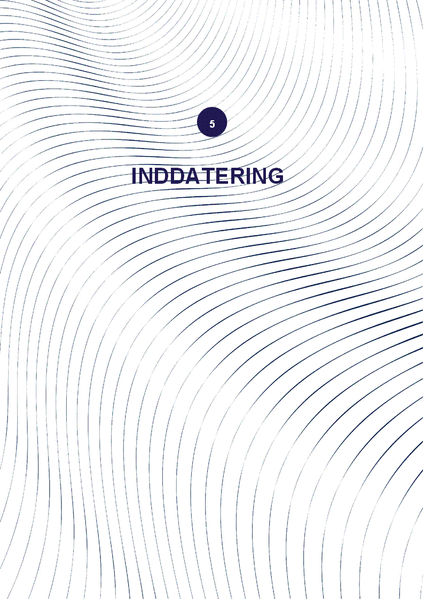
5 INDDATERING
I 'Inddatering' kan du inddatere data og sammensætte din beregning med henblik på at foretage en totaløkonomisk analyse af byggeriet og/eller af forskellige alternativer. Du kan vælge at foretage en samlet beregning for et helt byggeri, hvis det eksempelvis drejer sig om nybyggeri eller totalrenovering. Du kan også vælge at basere din beregning på enkelte bygningsdele, hvis blot enkelte bygningsdele ønskes sammenlignet.
Alle skabeloner kan vises i 'Almindelig grænseflade'. Almindelig grænseflade er opbygget af en 'Inddatering', 'Forudsætninger' og 'Rapporter'. Denne side beskriver inddateringsfeltet i LCCbyg i den almindelige grænseflade.
Inddateringsfeltet findes i programmets venstre side, når ’Inddatering’ er åben. Se markeringen på figur 18.
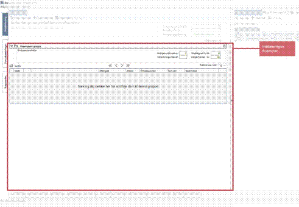
5.1 Inddateringsfelt
Når du åbner en skabelon (uanset om det er en af standardskabelonerne, en DGNB-skabelon eller den enkle skabelon) vil projektet være tomt bortset fra standardværdier, og den er klar til indtastning af projektspecifikke data. Det tomme projekt er at foretrække, hvis man ønsker at lave en ny totaløkonomisk beregning. DGNB-skabelonen vil dog indeholde fire foruddefinerede grupper ('Grund, rådgivning og bygherre', 'Terræn og bygning', 'Forsyning' og 'Renhold').
Du kan tilføje rækker ved at åbne en gruppe i programmets højreside under en kontoplan og trække den fra højre felt 'nøgletal' og slippe dem i den ønskede gruppe (figur 19). Se 'nøgletal' for flere informationer om navigering i nøgletal.
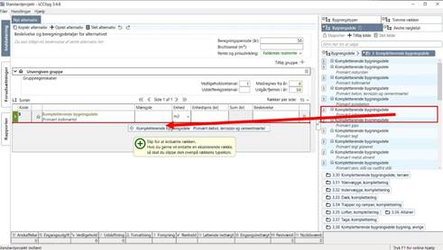
Projektspecifikke data kan indtastes i de tomme felter. Ønskes beregninger med andre værdier end standardværdierne kan disse redigeres, og farvekoden på standardværdierne ændres fra grøn til sort, hvilket viser, at der er tale om en brugerinddatering. LCCbyg benytter farvekoder til at synliggøre, hvor data kommer fra. Data med grøn farvekode viser, at værdierne er arvet fra kontoplanen, hvor sort farvekode viser, at værdierne er indtastet af brugeren selv. Ønskes det at gå tilbage til de arvede værdier fra programmet, kan den inddaterede værdi slettes. LCCbyg anvender tre typer af værdier:
• Prædefinerede værdier – de grønne værdier, programmet er født med.
• Inddaterede værdier – de sorte, brugerinddaterede værdier.
• Åbne værdier – tomme felter, der ikke indeholder prædefinerede værdier (fx mængder og enhedspris).
Alle inddateringsfelter har en indbygget lommeregner, således at der er mulighed for at lave simple udregninger. Lommeregneren kan håndtere de fire gængse regneoperationer: Plus, minus, gange og dividere. Efter afslutning af inddatering vil det ikke være muligt at se hvilke tal, der ligger til grund for den beregnede værdi.
Under ‘Inddatering’ skal der indtastes mængder og enhedspriser for hver bygningsdel, mens vedligehold og udskiftning beregnes af LCCbyg. For både vedligehold og udskiftning beregnes og vises værdierne som nutidskroner, dvs. omkostningen som den ville være, hvis den skulle afholdes i dag. LCCbyg sørger for at udregne omkostningen til en nutidsværdi for det pågældende år, hvor omkostningen forfalder.
Følgende afsnit er opdelt i to sektioner:
• ’Tilpasning af informationer i inddatering’ beskriver, hvordan inddaterede rækker kan tilpasses for bedst muligt at passe til dit byggeprojekt.
• 'Tilpasning af inddatering' beskriver, hvordan rækker og grupper kan tilpasses for at danne et visuelt overblik over inddatering.
5.2 Tilpasse informationer i inddatering
Følgende afsnit beskriver dine muligheder for at tilpasse de inddaterede informationer, så de passer bedst muligt til dit projekt. Foruden tilpasning af værdier er der følgende muligheder for at tilpasse det inddaterede:
• Tilføje og slette grupper og rækker.
• Erstatte rækker.
• Tilføje beskrivelser til rækker.
• Ændre prisudvikling.
• Slette eller tilpasse værdier.
• Valg af enheder.
Figur 20 giver overblik over mulighederne for at tilpasse og strukturere det inddaterede.
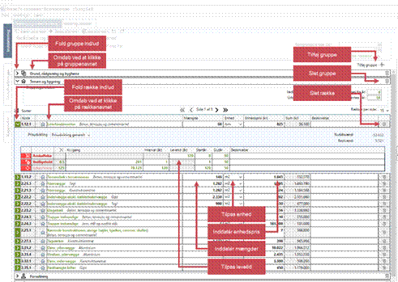
5.2.1 Tilføje og slette grupper og rækker.
Du kan tilføje lige så mange grupper, som du vil, men der skal altid være mindst én gruppe med tilhørende rækker under hvert alternativ. Bemærk at låste rækker ikke kan slettes. Hvis du kommer til at slette en række eller en gruppe ved en fejl, kan du fortryde dit valg. Hvis du tilføjer en eller flere grupper, vil de optræde med navnet ’Unavngiven gruppe’, indtil du omdøber dem. Navne på en gruppe kan ændres ved at trykke på navnet og overskrive det. De kendte tastaturknapper ‘Delete’ og ‘Backspace’ virker også her. På samme måde kan navngivning af rækkedetaljer tilpasses.
Alle grupper og rækker kan klappes sammen eller foldes ud ved hjælp af den lille pil i venstre side ud for navnet på en hovedgruppe eller omkostningstype. Det kan især være nyttigt for kontoplanerne ‘Terræn og bygning’ og ‘Renhold’, da de ofte vil indeholde så mange rækker, at de bliver uoverskuelige.
Rækker slettes ved at trykke på ‘Papirkurv’ yderst til højre for rækken, mens grupper slettes ved at trykke på symbolet for ‘Papirkurv’ i yderst til højre for gruppen. Bemærk, at eventuelle rækker og inddateringer slettes, når du sletter en gruppe. En undtagelse her er DGNB-skabelonen, hvor grupperne er låste og dermed ikke kan slettes.
5.2.2 Erstatte rækker
Du kan erstatte en række ved at slippe en anden række oven på rækkens typeikon. Dette er illustreret på figur 21. Inddaterede mængder og enhedspris fastholdes, imens de øvrige værdier skifter til de prædefinerede værdier for den nye række.
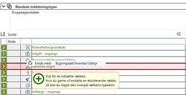
Note: For at erstatte en eksisterende række skal du slippe en ny række ovenpå rækkens typeikon.
5.2.3 Beskrivelser
Rækkerne omfatter også feltet 'Beskrivelser' (se figur 22). Dette felt kan være nyttigt fx til at lave henvisninger til kilden for en omkostning (fx kalkulation foretaget via Molio Prisdata eller egen prisdata), kilden til mængder (fx beregning foretaget i energiprogrammet Be18) eller behov for hjælp hos en kollega (fx "Susanne: Tjek venligst vinduesskema for mængder"). Kommentarerne i feltet 'Bemærkninger' kommer ikke med i rapporten (pdf-format), men vil naturligvis være tilgængelig i projektfilen (xml-format). Derudover omfatter Inddateringen feltet 'Sum', som viser det totale beløb for hver enkelt omkostningstype.
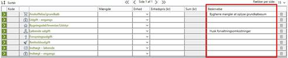
Note: Benyt beskrivelser til at referere til kilder, koordinere med kollegaer eller skrive påmindelser til dig selv.
De prædefinerede værdier har som udgangspunkt grøn farve. Farven ændres til sort, hvis værdien overskrives af brugeren, og derved kan der skelnes mellem de prædefinerede værdier og inddaterede værdier. Når man inddaterer eller overskriver værdier i de relevante felter, vil LCCbyg beregne nutidsværdi og restværdi for hver enkelt omkostningstype. Beregning af nutidsværdi, restværdi og den valgte materialetype bliver vist under den pågældende række.
Du kan tilføje en beskrivelse af det valgte alternativ i feltet umiddelbart under 'Beregningsperiode', 'Bruttoareal' og 'Rente og prisudvikling'.
5.2.4 Prisudvikling
Under hver række er der automatisk opmærkning prisudvikling, som bestemmes ift. rente- og prisudviklingssæt, der er valgt på for alternativet. Rente- og prisudviklingssættene bestemmes under Forudsætninger og inddateres for hele alternativet under detaljer for alternativ. Hvis du ønsker at tilpasse prisudviklingen for en række, så udfold rækken og vælg den ønskede prisudvikling af drop down-listen som vist på figur 23.
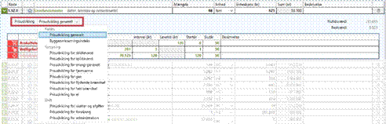
Note: En rækkes prisudvikling kan tilpasses ved at udfolde rækken og vælge en anden under prisudvikling.
5.2.5 Brug kun talværdier: Fejlmeddelelser
Der kan kun inddateres talværdier i skemaerne under ’Inddatering’ i LCCbyg. Indtastes bogstaver eller både tal og bogstaver bliver feltet markeret med en rød firkant rundt om indtastningsfeltet. Den røde firkant viser, at applikationen ikke kan beregne omkostningen så længe, der er indtastet bogstaver i feltet. Hvis man indtaster tal i feltet ved siden af, vil applikationen automatisk rette feltet med bogstaver ved at slette de indtastede værdier (bogstaver og tal). Talværdierne rundes desuden op til nærmeste hele tal.
5.2.6 Slet
Ændring eller sletning af en værdi fx en mængde sker ved at stille sig i datafeltet og overskrive værdien eller alternativt bruge 'Backspace' eller 'Delete' på dit tastatur. Arvede værdier fra kontoplanen, der er redigeret af brugeren og derved markeret sort (se afsnit 5.3.4 Farvekoder), vil gå tilbage til den arvede værdi fra kontoplanen og derved blive markeret med grøn, hvis værdien slettes. Du kan genskabe standardværdien ved at slette det brugerinddaterede og trykke enter. Husk at du også kan bruge funktionerne ’Fortryd’ og ’Gendan’ fx ved hjælp af genvejstasterne Ctrl+Z og Ctrl+Y.
5.2.7 Valg af enheder
Inddateringsskemaerne for ’Terræn og bygning’, ’Forsyning’ og ’Renhold’ har alle drop down-menuer, så du kan vælge passende enheder til mængderne og priserne. Valg af enhed fra drop down-menuen har ikke indflydelse på beregningen. Uanset om du har valgt enheden ’stk.’, ‘m2’ eller ’lbm’, så anvender applikationen værdien i kolonnen for mængder og enhedsprisen i beregningen. Drop down-menuen er alene en hjælp til dig som bruger, således at mængden og enhedsprisen bedre kan sættes i relation til hinanden.
5.3 Tilpasning af inddatering
Følgende afsnit beskriver dine muligheder for at skabe et overblik over inddateringen. Du kan bl.a. tilpasse rækkefølgen af grupper og rækker, ændre paginerings- og sorteringsindstillingerne samt benytte farvekoder.
• Tilpasse rækkefølge af rækker og grupper.
• Paginering af rækker i grupper.
• Sortering af rækker i grupper. • Farvekoder på gruppeniveau.
• Dynamiske gruppeikoner viser indhold i gruppe.
5.3.1 Træk og slip af rækker og grupper
Rækkefølgen af rækkerne kan ændres ved at klikke på en række og trække den enten op eller ned. Du kan også gøre kolonner bredere eller smallere ved at trække i kanten af kolonnens overskrift. Det er også muligt at trække en omkostningstype eller bygningsdel fra en gruppe til en anden gruppe ved at trække og slippe den i den gruppe, som du vil have den i (se figur 24).
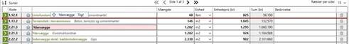
Note: Træk en række ved at klikke på den og flytte den. Den røde streg markerer indsættelsesstedet, slip rækken for at indsætte.
Rækkefølgen af grupperne kan ligeledes ændres ved at trække og slippe en gruppe. Se figur 25 nedenfor.
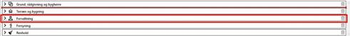
Note: Træk en gruppe ved at klikke på den og flytte den. Den røde streg markerer indsættelsesstedet, slip rækken for at indsætte.
5.3.2 Paginering af inddatering i grupper
Hver gruppe har en indbygget pagineringsfunktion. Som standard vises 15 rækker per side. Antallet af rækker per side indstilles til højre i hver gruppe som vist på figur 26. Du kan bladre imellem siderne ved brug af pilene vist midt på figur 26. Bemærk at '<<' og '>>' bladrer til starten henholdsvis slutningen af rækkerne i gruppen.
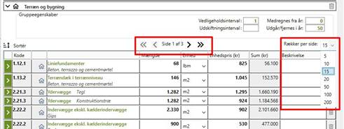
Note: Klik på 'rækker per side' for at indstille antallet af rækker per side og brug pilene til at bladre imellem siderne.
5.3.3 Sortering af inddatering i grupper
Hver gruppe har en indbygget sorteringsfunktion, der gør det muligt at sortere inddateringen i gruppen. Sorteringsfunktionen virker på tværs af alle sider i gruppen. Vælg din ønskede sortering via sorteringsfunktionen markeret til venstre i figur 27. Bemærk, at sorteringen er permanent.
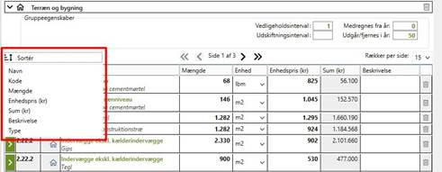
Note: Brug sorteringsfunktionen til at sortere rækkerne.
5.3.4 Farvekoder
Grupper kan farvelægges ved at klikke på ikonet ved gruppenavnet (se markering på figur 28). Herved kan der skabes nogle systemer i inddateringen, der gør det nemmere at identificere grupperne.
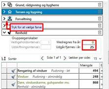
Note: Klik på gruppeikonet ved siden af gruppenavnet for at tilpasse gruppens farve.
5.3.5 Dynamiske gruppeikoner viser indhold i gruppe
Der findes 8 forskellige posteringstyper i LCCbyg. Typerne ses af figur 29 sammen med deres respektive typeikoner. Typeikonerne fremgår i hver række i det inddaterede. Hvis en gruppe kun har en posteringstype inddateret, vil dette typeikon fremgå som gruppeikon ved siden af gruppens navn. Derimod vil gruppeikonet ændre sig, hvis der inddateres to eller flere forskellige posteringstyper. De dynamiske gruppeikoner sikrer et let overblik over hvad projektets grupper indeholder.
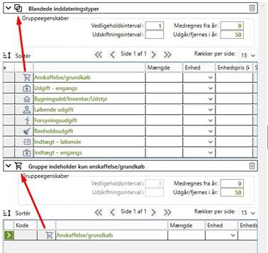
Note: Dynamiske gruppeikoner afspejler omkostningstyperne af det inddaterede i hver gruppe.
6 ALTERNATIVER
LCCbyg gør det muligt at arbejde med flere alternativer i den samme beregning. Alternativer oprettes og redigeres under 'Inddatering'. LCCbyg vil altid rumme mindst ét alternativ.
Du kan oprette, kopiere og slette alternativer. Du bør tilpasse detaljer for alternativer for alle alternativer i din beregning. Figur 30 giver et overblik over mulighederne for at tilføje, tilpasse og slette alternativer.
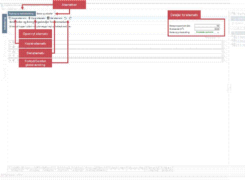
Et nyt alternativ kan oprettes ved at trykke på 'Opret alternativ' i værktøjslinjen. Du kan også kopiere et alternativ ved at trykke på 'Kopiér alternativ'. Dette er en fordel, hvis du kun vil foretage få ændringer imellem to alternativer. Fanen med grå (se alternativet navngivet ’Teglvæg og træbeklædning’ i figur 30) markerer hvilket alternativ, som du arbejder i.
Et alternativ kan slettes ved at trykke på 'Slet alternativ' i værktøjslinjen for det pågældende alternativ. Sletning af et alternativ kan fortrydes ved at trykke på 'Fortryd global ændring' i 'Handlinger' under Hovedmenulinjen.
Rækkefølgen af alternativerne kan ændres ved at trække og slippe alternativerne.
Alternativer kan frit navngives ved at stille sig i tekstfeltet for navne og skrive et nyt navn.
44
For hvert alternativ inddateres beregningsperiode, bruttoareal samt rente- og prisudvikling. Disse felter er nødvendige for at beregningen fungerer. Bemærk at beregningsperioden som standard er 50 år, når et nyt projekt åbnes. Tilsvarende vil standardprojekter have faldende realrente, mens DGNB-projekterne benytter ’fast nominel rente’. Tabel 8 beskriver hver af disse parametre.
TABEL 8. Detaljer for alternativ.
|
Parameter |
Beskrivelse |
|
Beregningsperiode |
LCCbyg beregner de årlige omkostninger ud fra den valgte beregningsperiode. Dette indsættes i feltet ‘Beregningsperiode’, hvor hele år angives. Kalkulations- eller beregningsperioden er som udgangspunkt sat til 50 år, men kan ændres til en værdi mellem 0 og 120 år, hvis det ønskes. Hvis beregningsperioden sættes til 0 år, vil applikationen kun beregne anskaffelsesomkostningerne. |
|
Bruttoareal |
I feltet 'Bruttoareal' indtastes etagearealet iht. beregningsreglerne i Bygningsreglementet. |
|
Rente- og prisudvikling |
Der vil altid være et forudindstillet rente- og prisudviklingssæt valgt i skabelonerne. Det er muligt at ændre rente og prisudvikling ved 'Almindelig grænseflade'. Under de enkelte omkostningstyper vil der være en drop down-menu, hvor du skal vælge den relevante rente og prisudvikling (læs mere herom under Forudsætninger). Du kan vælge blandt de følgende fire rente- og prisudviklingssæt: • Faldende realrente • Fast nominel rente • Fast realrente • Nuludvikling
|
Note: Bemærk, at afsnit 7 beskriver de forskellige rente- og prisudviklingssæt.
7 BEREGNINGSFORUD-SÆTNINGER
’Forudsætninger’ fastlægger en række generelle beregningsforudsætninger, dvs. kalkulationsrente og prisudvikling for forskellige omkostningsgrupper.
Figur 31 viser brugergrænsefladen for forudsætninger i LCCbyg. Her ses fire prædefinerede rente- og prisudviklingssæt, henholdsvis 'Faldende realrente', 'Fast nominel rente', 'Fast realrente' samt nuludvikling. Derudover ses detaljer for kalkulationsrente og prisudvikling for 'Faldende realrente'. Derudover ses en værktøjslinje under de fire alternativer, der kan bruges til at oprette, kopiere og slette udviklingssæt. Bemærk, at de fire prædefinerede udviklingssæt ikke kan slettes.
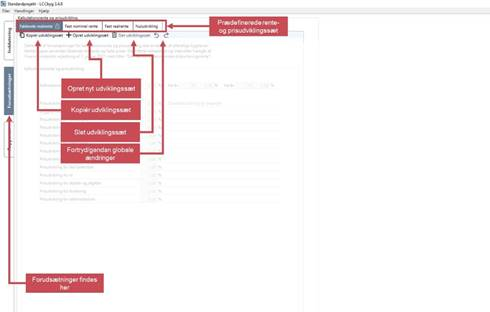
LCCbyg giver mulighed for, at brugeren kan arbejde med enten en ensartet eller forskellige kalkulations- eller diskonteringsrenter over tid.
7.1 Kalkulationsrente
Der er mulighed for at opdele i tre perioder. Værdien i den første boks angiver den anvendte kalkulationsrente fra starttidspunktet for beregningerne. Betegnelsen ’Fra år’ markerer starttidspunktet for brugen af den næste værdi for kalkulationsrenten, og så fremdeles med den sidste periode.
Som udgangspunkt er det ikke muligt at ændre værdier angivet i 'Forudsætninger', hvis du arbejder i en skabelon for standardprojekt eller skabelon for ’Almene boliger med SfB
48
|
Definér eget rente- og prisudviklingssæt ved at kopiere eksisterende rente- og prisudviklingssæt og tilpasse værdierne. Du kan kopiere det valgte rente- og prisudviklingssæt ved at trykke på 'Kopiér udviklingssæt' i værktøjslinjen. Derefter er det muligt at inddatere i kopien af den pågældende rente og prisudvikling, idet værdierne i kopien ikke længere er låste. Brugeren af LCCbyg skal være særlig opmærksom på, om der er typer af omkostninger, som forventes at stige eller falde mere end den gennemsnitlige prisudvikling. Hvis det er tilfældet, kan standardværdierne blot overskrives med egne værdier. Hvis det ikke er tilfældet, kan standardværdierne anvendes. Du skal dog være opmærksom på, at dine egne værdier i så fald fradrages den generelle prisudvikling. Hvis du fx vil anvende en prisudvikling på 6 % på en omkostning, og den generelle prisudvikling er sat til 2 % i applikationen, så skal du skrive 4 % ud for den pågældende omkostning. |
klassifikation’, idet disse værdier er låste og dermed beskyttet mod ændring (Se værdier er vist med grøn, opal farve i figur 32).
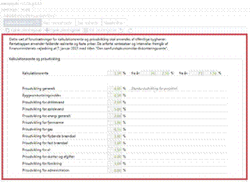
Offentlige bygherrer er forpligtet til at følge en faldende rentetrappe ift. Finansministeriets budgetvejledning med tillæg. Standardindstillingen viser den faldende rentetrappe. Som udgangspunkt er LCCbyg sat op til brug med rentetrappen for offentlige bygherrer, dvs. med en faldende realrente og faste priser.
7.2 Prisudvikling
Der er to forskellige måder at arbejde med prisudvikling på i LCCbyg: Enten med faste eller løbende priser. Hvis der arbejdes med faste priser, vil beløbet være det samme år efter år. Det vil sige, at et beløb på fx 100 kr. i år 1 også vil optræde som 100 kr. i alle de efterfølgende år. Hvis der arbejdes med løbende priser, vil beløbet ændre sig år for år svarende til prisudviklingen for den pågældende type af omkostninger. Ved en årlig prisudvikling på 2 % vil 100 kr. eksempelvis blive til 102 kr. i år 1, 122 kr. i år 10 og 269 kr. i år 50.
8 RESULTATER I RAPPORT
Beregningsresultaterne kan ses under ’Rapport’. Her findes en række prædefinerede rapportafsnit, der kan indtrækkes i rapporten. Du har således mulighed for at sammensætte og tilpasse rapporten efter dit behov. Rapporten står af to rapportdele, nemlig 'Rapport' og 'Rapportinformation'.
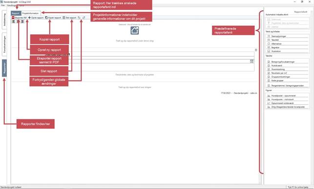
'Rapport' betragtes som hovedrapporten, som bl.a. kan bruges til at fremstille en fil i pdf-format med tekst, grafer og tabeller, resultater og beskrivelser fra projektet. Dette gøres via 'Eksporter PDF' i værktøjslinjen. Rapporter får automatisk indsat sidehoved og sidefod samt et afsnit med projekttitel, dato, forfatter/firmanavn og beskrivelse. Disse felter bliver benyttet i LCCbygs titellinje og i rapporternes sidefod.
Flere skabeloner har en ekstra rapport kaldet 'Projektinformation'. Den er et eksempel på, hvordan stamoplysninger og noter kan gemmes i en selvstændig rapport til internt brug. Under rapportafsnit vælger du hvilke afsnit, du ønsker at medtage i den endelige rapport. De tilgængelige rapportafsnit ses i højre side af skærmbilledet.
Når du er tilfreds med rapporten, kan du gemme som projektfil eller pdf (se mere under 'Eksport af rapport').
8.1 Sammensætning af rapporten
'Rapportafsnit' er en liste over afsnit med tekst, grafer og tabeller, du kan trække ind i din rapport. Placeringen af de tilgængelige rapportafsnit er markeret på figur 33 ovenfor. Figur 33 viser de typiske rapportafsnit, men bemærk, at disse kan variere fra skabelon til skabelon.
|
Generelle funktioner ved rapportafsnit
Benyt knapperne til at Indsatte tabeller kan højrestille, centrere farvelægges ved brug eller venstrestille ind- af maler-paletten. satte billeder. |
Tabeller kan eksporteres til regneark ved hjælp af denne knap.
|
Indsatte rapportafsnit kan slettes ved brug af skraldespanden.
|
Du kan medtage rapportafsnit ved at trække dem over i rapporten i venstre side. Du kan frit vælge, hvor du vil placere det pågældende afsnit ved at trække det op/ned i venstre side. Du kan i øvrigt ændre rækkefølgen på rapportafsnit i rapporten ved at trække og slippe dem.
Som standard er der en række afsnit indsat på forhånd i rapporten, men disse kan du ændre, så det passer til dine behov. (Se ’automatisk indsatte afsnit’ i tabel 9).
TABEL 9. Automatisk indsatte rapportafsnit.
|
Rapportafsnit |
Visning i LCCbyg |
|
Sidehoved Du kan indsætte din virksomheds logo eller lignende i sidehovedet. |
|
|
Projekttitel, dato og beskrivelse Her kan du indtaste informationer omkring dit projekt. |
|
|
Sidefod Sidefoden genereres automatisk på baggrund af de informationer, der er indtastet i ’projekttitel, dato og beskrivelse’. |
|
Derudover indeholder LCCbyg en række prædefinerede rapportafsnit. Disse er sorteret i tre grupper; hhv. ’Tekst og billeder’ (se tabel 10), ’Tabeller’ (se tabel 11) og ’Figurer’ (se tabel
12).
TABEL 10. Rapportafsnit under ’Tekst og billeder’.
|
Rapportafsnit |
Visning i LCCbyg |
|
Stamoplysninger Her kan du uddybe informationerne omkring dit projekt og bl.a. angive hvem den ansvarlige for projektet er. |
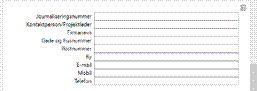
|
|
Tekstfelt Tekstfelter kan indsættes ubegrænset i rapporten. De kan bl.a. bruges til at beskrive tabeller og figurer i rapporten. |
|
|
Alternativer Alternativer indsætter ’detaljer for alternativ’ for hvert alternativ i projektet. Du kan således sammenligne to eller flere alternativers detaljer i form af rente- og prisudviklingssæt, bruttoarealer samt beskrivelser. For flere informationer, se afsnit 6 Alternativer. |
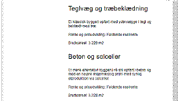
|
|
Begreber Dette rapportafsnit beskriver de væsentligste begreber, der indgår i beregningen. Tekstfeltet er låst og kan ikke redigeres. |
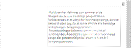
|
|
Illustration Illustrationer kan indsættes via dette rapportafsnit. Derved kan visualiseringer eller faktiske billeder af projektet indsættes. Det kan også være plantegninger eller lignende. Der kan indsættes flere illustrationer i rapporten. |
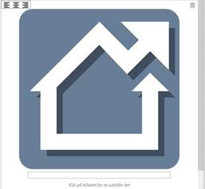
|
TABEL 11. Rapportafsnit under ’tabeller’.
|
Rapportafsnit |
Visning i LCCbyg |
|
Beregningsforudsætninger Tabellen beskriver beregningsforudsætningerne for projektets alternativer. |
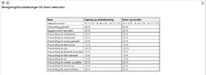
|
|
Nutidsværdi Nutidsværdien defineres som summen af de tilbagediskonterede fremtidige pengestrømme. Nutidsværdien er et udtryk for, hvor mange penge, der skal sættes til side i dag for at kunne afholde alle fremtidige omkostninger i beregningsperioden. Afsnittet 'Nutidsværdier' opsummerer de vigtigste beregninger i tabelform. Tabellen giver en oversigt over fordelingen af omkostningerne på hovedomkostningsgrupper. Anskaffelse angiver summen af omkostningerne forbundet med anskaffelsen i ’År 0’. De øvrige hovedomkostningsgrupper omfatter driftsomkostningerne over tid. |
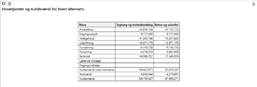
|
|
Årsomkostning Tabellen viser de årlige omkostninger forbundet med hver af projektfilens alternativer. Der skelnes imellem årsomkostninger med og uden restværdi. |
|
|
Resultater per m2 Tabellen indeholder nutidsværdi og årsomkostning opgjort per kvadratmeter for hvert af projektets alternativer. Der skelnes imellem nutidsværdier og årsomkostninger med og uden restværdier. Til beregningen benyttes bruttoarealet inddateret under ’detaljer for alternativ’ (se afsnit 6 Alternativer). |
|
|
Gruppeomkostninger 'Gruppeomkostninger' for hvert alternativ vises i tabelform og opsummerer omkostningerne forbundet med de forskellige hovedomkostningsgrupper. |
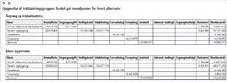
|
|
Kodegrupper Dette rapportafsnit indsætter en tabel per alternativ i projektet. Hver af tabellerne gennemgår de respektive alternativers fordeling af nutidsværdier fordelt på hovedposter og SfB-hovedgrupper. |
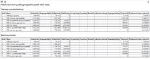
|
|
Pengestrømme i beregningsperioden Dette rapportafsnit resulterer i en tabel per alternativ i projektet. Hver af tabellerne indeholder de årlige pengestrømme i beregningerne for hvert alternativ fordelt på hovedposterne. Derved synliggøres det bl.a. i hvilke år, der falder en ekstra omkostning grundet udskiftning af bygningsdele. |
|
TABEL 12. Rapportafsnit under ’Figurer’.
|
Rapportafsnit |
Visning i LCCbyg |
|
Hovedposter – opsummeret Dette rapportafsnit opsummerer alternativernes hovedposter grafisk. Du kan fremvise værdierne i listeform ved at holde cursoren over en vilkårlig farve på grafen. |
|
|
Hovedposter – individuelt Dette rapportafsnit viser alternativernes hovedposter individuelt. Du kan fremvise værdierne i listeform ved at holde cursoren over en vilkårlig farve på grafen. |
|
|
Opsummeret nutidsværdi 'Opsummeret nutidsværdi' viser de årlige nutidsværdier for de valgte alternativer i hele beregningsperiode. Værdierne for de forskellige alternativer vises som graf, hvor y-aksen viser omkostning, mens x-aksen viser årstal (den angivne beregningsperiode). For at fremvise nutidsværdien i et bestemt årstal, skal du holde cursoren over årstallet, hvorefter der dukker en tekstboks op, som viser værdier for de valgte alternativer i det pågældende år (årstal vises med sort-fed skrift).
|
|
|
Årlig tilbagediskonterede hovedposter Årsomkostning defineres som en annuitet af nutidsværdien. Årsomkostning udtrykker hvor mange penge, der gennemsnitligt skal afsættes hvert år i beregningsperioden. Af grafen fremgår restværdien for hvert år i hele beregningsperiode. Der indsættes en graf per alternativ. |
|
8.2 Eksport af rapport og rapport afsnit
LCCbyg giver dig mulighed for at gemme din rapport på to måder:
• Eksport af samlet rapport til PDF.
• Eksport af tabeller til regneark.
8.2.1 Eksport af rapport
Når du er tilfreds med dine valg, kan du gemme en rapport ved at trykke på 'Eksporter PDF' i værktøjslinjen. Dermed åbner en filvælger, hvor du bestemmer, hvor du vil gemme rapporten. Når LCCbyg har gemt PDF-filen, bliver du spurgt, om du vil åbne den. Klik 'Ja' hvis du vil se rapporten med det samme. Klik 'Nej' hvis du vil vente med at se rapporten.
Rapporten bliver gemt som et PDF-dokument, der fx kan sendes til beslutningstagere m.fl., som kun er interesserede i at læse rapporten. Hvis modtageren også skal kunne arbejde videre med beregningerne, skal du i stedet sende projektfilen, som gemmes i xml-format (lccxml) og kan genindlæses i applikationen hos modtageren. Det kan du gøre ved at klikke på 'Filer -> Gem som' eller bruge genvejstasten Ctrl+S. På tilsvarende vis kan du gemme projektinformation som en selvstændig PDF-fil.
8.2.2 Eksport af tabeller til regneark
Alle tabeller i rapporten kan eksporteres til regneark, som kan åbnes og redigeres i både MS Excel, Libre Office og andre regnearksprogrammer. Tryk på eksportikonet til højre for farvepaletten (se eksempel i figur 35). Dermed åbner en filvælger, hvor du bestemmer, hvor du vil gemme regnearket. Når LCCbyg har gemt filen, bliver du spurgt, om du vil åbne den. Klik 'Ja', hvis du vil se regnearket med det samme. Klik 'Nej', hvis du vil vente med at se regnearket.
9 MÅLSÆTNINGER
I skabelonen 'Almene boliger med SfB' er det muligt at opstille målsætninger for hvert alternativ. På den måde kan det vurderes, hvilke målsætninger hvert projekt lever op til i hvilken grad.
I LCCbygs højreside findes fanebladet 'Målsætninger' (se figur 36). Denne indeholder 18 prædefinerede målsætninger, som du kan vælge imellem. Derudover kan du oprette dine egne målsætninger ved brug af rækken 'Anden målsætning'. Målsætninger inddateres på samme måde som nøgletal ved at vælge de relevante målsætninger og trække over i gruppen 'Målsætninger' i inddateringen, hvor alle målsætninger inddateres samlet. Gruppen er låst, og den kan derfor hverken slettes eller flyttes.
Note: Træk en målsætning over i inddateringsfeltet og slip. Benyt drop down i ’Effekt’ til at score effekten af målsætningen i indeværende alternativ.
Det er muligt at opstille en/flere målsætninger for hvert projekt. Målsætningerne gælder på tværs af alternativerne i et projekt. Målsætningerne skal scores efter hvilken effekt, som alternativet har på opfyldelsen af den pågældende målsætning. Der kan gives en score for hver målsætning fra 'meget negativ' svarende til -3 til 'meget positiv' svarende til +3. Har alternativet ingen effekt på målsætningen, kan det scores til 'hverken/eller'. Der er også mulighed for at skrive en kort begrundelse for den valgte score.
Hvis der er tvivl om, hvordan der skal scores, kan du klikke på typeikonet og læse nærmere i informationsboksen (se figur 37).
Note: Tooltip indeholder anbefalinger til, hvordan alternativets effekt for den valgte målsætning evalueres.
10 MILJØPÅVIRKNINGER
DGNB Byområder beregner foruden levetidsomkostninger også CO2-udledninger forbundet med et byområde. Miljøpåvirkningerne (i form af CO2-udledninger) beregnes via 'Miljøpåvirkningsscenarie' og nøgletal udviklet til certificering af byområder fra DGNB2020-manualen for byområder.
10.1 Miljøpåvirkningsscenarier
I denne skabelon er det muligt at vælge miljøpåvirkningsscenarier på samme vis som for rente- og prisudvikling. I skabelonen er det muligt at vælge mellem to miljøpåvirkningsscenarier:
• Ingen udvikling (det scenarie der anvendes i DGNB).
• Fremskrivning 2020 (denne fremskrivning er baseret på politiske mål om at øge andelen af vedvarende energi i dansk energiforsyning i perioden 2020-2050). Fremskrivningen gælder for el og fjernvarme. Kilde: Trafik-, Bygge, og Boligstyrelsen: Nye emissionsfaktorer for el og fjernvarme 2020.
Miljøpåvirkningsscenarierne findes under fanen 'Forudsætninger' i denne skabelon. Her kan de konkrete værdier for de to nævnte scenarier ses (figur 38).
På samme vis som det er muligt at opbygge sit eget sæt af rente- og prisudvikling i LCCbyg, er det her også muligt at opbygge sit eget miljøpåvirkningsscenarie. Dette gøres ved at oprette en kopi af et af de to scenarier og ændre i værdierne herfor til det ønskede scenarie. Der skal dog gøres opmærksom på, at i DGNB-regi opereres der endnu ikke med en udvikling for miljøpåvirkningsscenarier.
10.2 Miljøpåvirkninger
Skabelonen 'DGNB-byrum' indeholder nøgletal for arealer, forsyning og renhold. Nøgletallene er opbygget med udgangspunkt i strukturen i DGNB Byområde Manualen 2020. Kontoplanen kommer med levetider, priser på forsyning og renhold samt CO2-miljøpåvirkning (GWP) referenceværdier.
Beregninger med værktøjet giver et overslag over de forventede omkostninger og CO2miljøpåvirkning (GWP) til gennemførelse af en byudviklingsopgave og den efterfølgende drift heraf over en 50-årig periode samt eventuelle udskiftninger undervejs. Beregningerne bygger på generiske nøgletal, som ikke nødvendigvis er retvisende for den konkrete opgave. Priser er baseret på vejledende overslag fra Molio Prisdata. Forventede levetider er bearbejdet fra levetidstabellen i rapporten BUILD2021:32 (Haugbølle et al., 2021).
Miljøpåvirkningerne stammer fra BMVBS 2012, her er A1-3 Produktfasen opgivet. Denne værdi er på baggrund af en erfaringsbaseret fordelingsnøgle (ses herunder) anvendt til at fastlægge de resterende moduler under areal-rækkerne, nemlig B2 Vedligehold og B4 Udskiftning, som anvendes i denne skabelon. Den erfaringsbaserede fordelingsnøgle er bestemt ud fra SBi 2020:04 (Zimmermann et al., 2020).
• A1-3 Produkt: Svarende til 50 % af den samlede udledning.
• B2 Vedligeholdelse: Svarende til 10 % af A1-3 Produktfasen.
• B4 Udskiftning: Svarende til A1-3 adderet med C3/C4.
• B6 Forsyning: Svarende til 25 % af A1-3 Produktfasen – dette indtaster man dog separat på samme måde som Renhold.
• C3/C4 Bortskaffelse: Svarende til 15 % af A1-3 Produktfasen (Modulerne vedrørende bortskaffelse er ikke en del af DGNB Byområde).
Usikkerheden på resultaterne afhænger af de anvendte beregningsforudsætninger og data til beregningerne. Ændringer af disse kan have stor betydning for resultaterne. Ved mere komplekse byggeopgaver eller behov for mere retvisende beregninger bør en rådgiver konsulteres og følsomhedsanalyser gennemføres.
Resultaterne for det pågældende alternativ vises nederst i LCCbyg. Det giver mulighed for en umiddelbar sammenligning af resultater på tværs af alternativerne inden for det pågældende projekt. De detaljerede resultater omfatter følgende posteringstyper og CO2-udledninger for de respektive faser i kontoplanen. Se afsnit 4.2 Posteringer for nærmere beskrivelse af posteringstyper.
11 BOSSINF
BOSSINF STB er et system, der benyttes til administration af kommunernes anmodninger om officiel støtte i henhold til lovgivningen om støttet boligbyggeri, herunder almene boliger. Skabelonen ’Almene boliger med SfB’ er en udvidet version af standardprojektet, hvor bygningsdele er opdelt efter SfB med mulighed for opmærkning efter BOSSINF. Figur 40 viser, at BOSSINF-koderne findes på rækkeniveau under nøgletallene i programmets højre side, og når rækken er trukket over i inddateringen i programmets venstre side.
Når rækken er inddateret, kan BOSSINF-opmærkningen ændres, såfremt der er behov for dette. Dette gøres ved at klikke på drop down-menuen og vælge den nye opmærkning. Tabel 13 indeholder en oversigt over de mulige opmærkninger i BOSSINF. I LCCbyg er de sorteret under seks BOSSINF-grupper, der i overordnede termer beskriver BOSSINF-kodens natur.
Udover BOSSINF-koder er der i skabelonen ’Almene boliger med SfB’ mulighed for opmærkning via ’Typer’. ’Typer’ benyttes til at beskrive hvilken støttekategori, som omkostningen knytter sig til. Der kan vælges imellem følgende typer af støttekategorier:
• Grundudgifter.
• Opretning.
• Ombygning.
• Miljøarbejder.
• Nedrivning.
• Infrastruktur.
• Modernisering.
• Nedslidning.
66
TABEL 13. Tilgængelige BOSSINF opmærkninger i LCCbyg.
|
BOSSINF-gruppe |
BOSSINF-kode |
|
Grundudgifter |
Grundudgifter i alt |
|
Håndværkerudgifter |
Tag Ydervægge Døre og vinduer Altaner og altangange Etageadskillelser Fundament og kælder Vådrum Afløb i jord og bygninger Tekniske anlæg Øvrige bygningsdele Arealudvidelse |
|
Andre håndværkerudgifter |
Udgifter til byggeplads Bygherreleverance Særlige vinterforanstaltninger Mindre reguleringer og uforudseelige udgifter |
|
Omkostninger |
Teknisk rådgivning Byggesagshonorar Bestyrelsesudgifter Genhusningsudgifter Byggeadministration Stiftelsesprovision Byggelånsrenter Øvrige finansielle udgifter |
|
Gebyrer |
Bidrag til Byggeskadefonden Byggetilladelse og andre gebyrer |
|
Driftsresultat i byggeperioden |
Driftsudgifter i byggeperioden Lejeindtægter i byggeperioden |
12 DEN ENKLE SKABELON
Den enkle skabelon er målrettet den ikke-professionelle bruger og er særlig anvendelig for dig, hvis du er en ejer- eller andelsboligforening, mindre privat udlejer, parcelhusejer eller håndværker. Skabelonen er især brugbar ved planlægning af mindre renoveringsopgaver, hvor du har brug for et hurtigt overslag over de samlede omkostninger til byggeopgaven og den efterfølgende drift.
Skabeloner valgt under 'Den enkle skabelon' åbner som standard i en enkel grænseflade, hvor der blot skal vælges rækker fra kontoplanen, og mængderne af disse indtastes. Hvis der undervejs opstår et behov for at kunne justere i detaljerne af rækkerne, kan dette gøres ved at skifte til almindelig grænseflade, hvor du har flere muligheder (se mere under afsnit 12.4.3 Skiftning af visningsformat).
Note: De tomme skabeloner ses til venstre, og eksemplerne ses til højre.
Disse skabeloner indeholder detaljer vedrørende typisk vedligehold, enhedspriser samt levetid mm. Som bruger skal du blot indtaste dine mængder.
Rente- og prisudviklingen for den enkle skabelon er prædefineret til fast realrente. Dette rente- og prisudviklingssæt er beskrevet under 'Forudsætninger'. Hvis du ønsker et andet rente- og prisudviklingssæt, skal du skifte til den almindelige grænseflade, og derefter tilpasse som beskrevet under 'Alternativer - Rente og prisudvikling'.
I den enkle grænseflade består LCCbyg af følgende moduler:
• Hovedmenulinje giver bl.a. mulighed for at skifte imellem henholdsvis almindelig og enkel brugergrænseflade.
• Alternativer - brug af flere alternativer gør det muligt at sammenligne to eller flere totaløkonomiske beregninger.
• Nøgletal for typiske drifts- og vedligeholdelsesopgaver for ejerboligforeninger og andelsboligforeninger.
• Rækketyper og posteringer - her kan du se hvordan forskellige typer af inddatering påvirker din beregning.
• Inddatering - her kan du inddatere data og sammensætte din beregning med henblik på at foretage en totaløkonomisk analyse af byggeriet og/eller af forskellige alternativer.
• I Rapporten sammenfattes resultaterne fra den totaløkonomiske beregning på baggrund af det.
12.1 Nøgletal
I den enkle skabelon findes én fane med nøgletal. Denne er udformet med udgangspunkt i 20-punkts listen for typiske drifts- og vedligeholdsplaner for ejerboligforeninger og andelsboligforeninger. Du kan læse mere om de forskellige aspekter og bygningskomponenter under 'Videnskilder' på lccbyg.dk/videnskilder/.
Figur 40 viser 'Opgaver' fordelt på de 20 punkter. Hver af disse indeholder én eller flere rækker, der kan inddateres. Du kan klikke på informationstegnet ud for typeikonet for at læse nærmere om den valgte gruppe eller række, som markeret på figur 40.
12.2 Rækketyper
LCCbyg benytter rækketyper til posteringer. Der findes i alt 6 forskellige rækketyper i den enkle skabelon, imens det øvrige LCCbyg benytter 8 rækketyper. Hver af disse indeholder forskellige posteringstyper, som indgår i de totaløkonomiske beregninger.
Tabel 14 indeholder beskrivelser af de 6 forskellige rækketyper, der indgår i den enkle skabelon i LCCbyg. Yderligere viser kolonnen 'Typeikon' de respektive symboler for de forskellige rækketyper. Disse fremkommer både blandt nøgletal og i inddateringen, således at du let kan se hvilken rækketyper og derved posteringstype, der er tale om. I det efterfølgende beskrives de typiske rækkedetaljer og posteringstyper for de forskellige rækketyper.
TABEL 14. Typeikon for postering i den enkle skabelon.
|
Typeikon |
Rækketype |
Beskrivelse |
|
|
Engangsudgift |
Benyttes til postering af engangsudgifter. Dette kan fx være honorarer til arkitekter og ingeniører eller udgifter til byggeplads. |
|
Løbende udgift |
Benyttes til postering af løbende udgifter. Dette kan eksempelvis være løbende administrationsudgifter, ejendomsskat, dækningsafgifter eller forsikringer. |
|
|
|
Bygningsdel |
Benyttes til anskaffelse af bygningsdele. |
|
|
Forsyningsudgift |
Forsyningsudgifter dækker over de løbende udgifter til forsyning af dit byggeprojekt, herunder varme, el og vandforbrug. |
|
|
Renholdsudgift |
Renholdsudgifter dækker over de løbende udgifter til renhold af dit byggeri. Det kan fx være vinduespudsning, gulvvask eller snerydning. |
|
|
Løbende indtægt |
Løbende indtægter dækker over de løbende indtægter dit byggeri har. Det kan fx være solcellestrøm, vindmøllestrøm eller solvarmeanlæg. |
Bemærk, at der er yderligere to rækketyper, der benyttes i de øvrige skabeloner af LCCbyg, henholdsvis Anskaffelse og Engangsindtægt. For nærmere information om disse, se 'Rækketyper og posteringer' under 'Nøgletal og kilder'.
12.3 Posteringstyper
Der findes 9 forskellige posteringstyper I LCCbyg. Den enkle skabelon er opbygget efter et princip, hvor du skal indtaste et minimum af informationer, imens LCCbyg indeholder resten. Fælles for alle posteringstyper er, at der skal angives mængder, imens nogle også skal have inddateret enhedspriser. I det følgende gennemgås de forskellige posteringstyper og hvordan disse påvirkes af inddateringen.
12.3.1 Anskaffelse
Posten 'Anskaffelse' indeholder anskaffelsesomkostningerne i dit projekt. Typisk vil det være omkostninger til fx facaderenovering inkl. arbejdskraft. Anskaffelsen bliver påvirket af rækker fra følgende opgavegrupper:
• Afløb og kloak.
• Altaner.
• Elevator.
• Elinstallationer.
• Etageadskillelser.
• Facader og sokler.
• Gasinstallationer.
• Gulve.
• Indervægge og skillevægge.
• Kælder og fundamenter.
• Lofter.
• Porte og gennemgange.
• Tag.
• Trapper.
• Udearealer.
• Vandinstallationer.
• Varmeinstallationer.
• Ventilation.
• Vinduer og udvendige døre.
12.3.2 Engangsudgift.
Engangsudgifter konteres i det år, der er angivet i ‘startår’. Typisk vil engangsudgifter dække over omkostninger til byggeplads, honorarer til arkitekt, ingeniør o. lign. eller bygherreomkostninger.
12.3.3 Vedligehold
Posten for vedligeholdelse er delt i et årligt vedligehold og periodisk vedligehold. Posten for årlig vedligeholdelse dækker primært over inspektion, rensning og småreparationer. Når intervallet er lig én, medregnes vedligehold i alle år, også i det år bygningsdelen udskiftes. Et interval på én bruges derfor til at angive et teoretisk gennemsnit eller til at supplere et periodisk vedligehold med opgaver, der også udføres samme år, som en del udskiftes.
Posten for den periodiske vedligeholdelse dækker over alt andet vedligehold, der gentages i en periode over et år. Ved værdier der er større end ét, startes intervallet forfra, når en del udskiftes. Ved udskiftning bortfalder det periodiske vedligehold det pågældende år. Når intervallet er større end udskiftningsintervallet, vedligeholdes der ikke.
De inddaterede nøgletal kommer med en prædefineret vedligeholdelsesprocent, som ikke kan ændres. Denne angiver hvor mange procent af anskaffelsesværdien, der årligt skal bruges på løbende vedligehold af bygningsdelen/typen. Hvis du ønsker at afsætte et større beløb per vedligeholdsgang, kan du tilpasse dette ved at skifte til 'Almindelig grænseflade' (se under Hovedmenulinjen - Vis) og afsætte et større beløb under ‘Kr./gang’.
12.3.4 Udskiftning
LCCbyg hensætter 125 % af anskaffelsesomkostning til udskiftning af bygningsdelen/typen ved endt levetid.
Udskiftningsprocenten kan ikke ændres, men hvis du ønsker at afsætte et større eller lavere beløb til udskiftning af bygningsdelen, kan du tilpasse dette ved at skifte til 'Almindelig grænseflade' (se under Hovedmenulinjen - Vis) og afsætte et større beløb under ‘Kr./gang’. LCCbyg beregner udskiftning med udgangspunkt i ‘Levetid (år)’ og ‘Startår’ året for beregningsperioden. Hvis ‘Startår’ for udskiftningen er større end udløb af beregningsperioden, vil programmet ikke medtage udskiftningen.
12.3.5 Forvaltning
Forvaltning omfatter omkostninger til skatter, forsikring osv. Under denne omkostningskosttype skal mængden, enhedsprisen samt start- og slutår inddateres. Forvaltningsomkostningerne falder som en løbende udgift, der medregnes årligt fra startår til slutår.
12.3.6 Renhold
Renhold omfatter omkostninger til forskellige typer af renhold i beregningen baseret på standardværdier for frekvens (per år) og enhedspriser. Enhedsprisen dækker alle omkostninger i forbindelse med renhold inkl. rengøringspersonale og overheadomkostninger. Enhedspriserne opgøres i kr./m2 eller kr./stk.
Under ‘Inddatering’ skal du alene indtaste mængder. Du kan dog om nødvendig overskrive standardværdierne under ‘Inddatering’ ved at skifte til 'Almindelig grænseflade' (se under Hovedmenulinjen - Vis). Udgifter til renhold er en løbende udgift, der medregnes årligt fra startår til slutår.
12.3.7 Løbende indtægt
Forsyningsindtægter posteres som løbende indtægter i LCCbyg. Forsyningsindtægter omfatter indtægter fra lokal produktion af elektricitet på ejendommen typisk i form af elektricitet fremstillet ved hjælp af solceller på tag og facade eller ved hjælp af en lille husstandsvindmølle på taget.
Under ‘Mine opgaver’ skal du alene indtaste mængder. Du kan dog om nødvendig overskrive enhedsprisen. Bemærk, at forsyningsindtægter skal medregnes positivt i beregningen, hvorfor enhedsprisen har positivt fortegn. Ændres enhedsprisen til negativ vil forsyningsindtægten i stedet blive en løbende udgift posteret i løbende indtægt. Forsyningsindtægt er en løbende udgift, der medregnes årligt fra startår til slutår.
12.3.8 Engangsindtægt
Engangsindtægter kan eksempelvis forekomme, hvis du får et tilskud eller sælger en bygningsdel til genbrug fx dine vinduer i år 10. Engangsindtægter kan også bruges til scrapværdier. Denne postering vil normalvis ikke påvirkes af beregninger i den enkle skabelon, da rækketyper med denne posteringstype ikke direkte kan inddateres fra nøgletallene/'Opgaver'.
12.4 Inddatering
I 'Inddatering' kan du inddatere data og sammensætte din beregning med henblik på at foretage en totaløkonomisk analyse af byggeriet og/eller af forskellige alternativer. Du kan vælge at foretage en samlet beregning for et helt byggeri, hvis det eksempelvis drejer sig om totalrenovering. Du kan også vælge at basere din beregning på enkelte bygningsdele, hvis blot enkelte bygningsdele ønskes renoveret. Skabeloner fra 'Den enkle skabelon' er skræddersyet til alle brugere og indeholder enhedspriser i kontoplanen. Her kan der vælges mellem skabelonen 'Renoveringsopgaver' og/eller det underliggende eksempel, som kan redigeres.
Under 'Inddatering' kan bygningselementer trækkes over i 'Mine opgaver', hvor de kan inddeles i grupper under forskellige alternativer.
12.4.1 Inddatering af rækkedetaljer
Du kan tilføje rækker ved at åbne en gruppe i programmets højreside under 'Opgaver' og trække den fra højre felt 'Kontoplaner' og slippe dem i den ønskede gruppe (se figur 42). Se afsnit 3.1 Navigation i kontoplaner for flere informationer om navigering i nøgletal.
Note: Klik på en gruppe for at åbne den. Vælg en række, træk og slip under den ønskede gruppe.
12.4.2 Landingszone
LCCbyg version 3.4 fortæller dig, om du kan slippe rækken på et givent sted. Figur 43 viser træk og slip af rækkedetaljer inden for gruppen tillades. Modsat kan træk og slip uden for en gruppe ikke lade sig gøre.
12.4.3 Skiftning af visningsformat
I nogle skabelonerne vil der være en ‘Vis’ fane øverst i hovedmenulinjen. Her er der mulighed for at skifte mellem flere visninger. I ‘Den enkle skabelon’ kan der vælges mellem: ‘Enkel grænseflade’ og ‘Almindelig grænseflade’. Begge grænseflader gemmer i samme filformat, og derfor er det muligt at åbne dem i begge visningstyper. Figur 40 viser, hvordan der kan skiftes imellem grænseflader i den enkle skabelon.
Den enkle grænseflade er et simpelt visningsformat, hvor der blot skal vælges bygningskomponenter/rækker fra kontoplanen og indtastes mængderne af disse. Er der undervejs behov for at kunne justere i detaljerne af rækkerne, kan dette gøres ved at skifte til ’Almindelig grænseflade’ (Læs mere under Hovedmenulinjen – Vis).
Hvis der er ændret i nøgletallene i ’Almindelig grænseflade’ og visningsformatet ændres til ’Enkel grænseflade, vil der fremkomme en gul advarselstrekant/disclaimer, der vil minde om, at der er foretaget nogle ændringer i ’Almindelig grænseflade’, der ikke er adgang til i ’Enkel grænseflade’.
Note: Den gule advarselstrekant/disclaimer indikerer, at der er foretaget ændringer i værdier i den almindelige grænseflade.
Bemærk, at redigerede værdier fremkommer med sort skrift, mens standardværdier fremkommer med grøn skrift.
12.5 Rapport
Rapporten sammenfatter resultaterne fra den totaløkonomiske beregning på baggrund af det inddaterede. Hvis du har oprettet flere alternativer i beregningen, gør rapporten det også muligt at sammenligne resultaterne på tværs af alternativer.
Den enkle skabelon vises som udgangspunkt i en enkel brugergrænseflade som vist på figur 46. Her er de centrale rapportafsnit er valgt for dig, og der ikke er mulighed for at tilføje og fjerne dem. De valgte afsnit er følgende:
• Alternativer.
• Opsummeret nutidsværdi (uden restværdi).
• Hovedposter fordelt efter kodegrupper.
• Årsomkostninger for hvert alternativ opgjort som annuitet per år.
• Årligt tilbagediskonterede hovedposter for hvert alternativ.
• Hovedposter og nutidsværdi for hvert alternativ.
• Beregningsforudsætninger for hvert alternativ.
Hvis du ønsker at tilpasse, hvad din rapport indeholder, kan du skifte til den almindelige brugergrænseflade. Dine muligheder for at opbygge din egen rapport i almindelig brugergrænseflade er beskrevet under afsnit 8 Resultater i rapport.
Du kan udtrække hele rapporten som pdf eller tabeller til regneark via eksport af rapport og rapportafsnit.
13 REFERENCER
Haugbølle, K., Mahdi, V., Morelli, M., & Wahedi, H. (2021). BUILD levetidstabel - version 2021.
Udviklings- og Forenklingsstyrelsen. (2020). Nye anvendelseskoder for bygninger version 7,
19-05-2020. https://ki.bbr.dk/file/664783/nye-anvendelseskoder-bygninger.pdf Zimmermann, R. K., Andersen, C. E., Kanafani, K., & Birgisdóttir, H. (2020).
KLIMAPÅVIRKNING FRA 60 BYGNINGER - MULIGHEDER FOR UDFORMNING AF REFERENCEVÆRDIER TIL LCA FOR BYGNINGER.
78